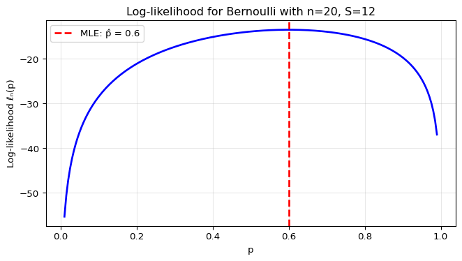
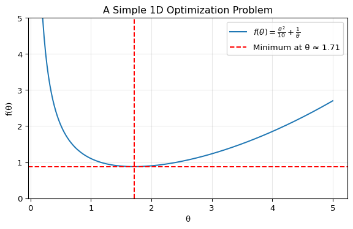
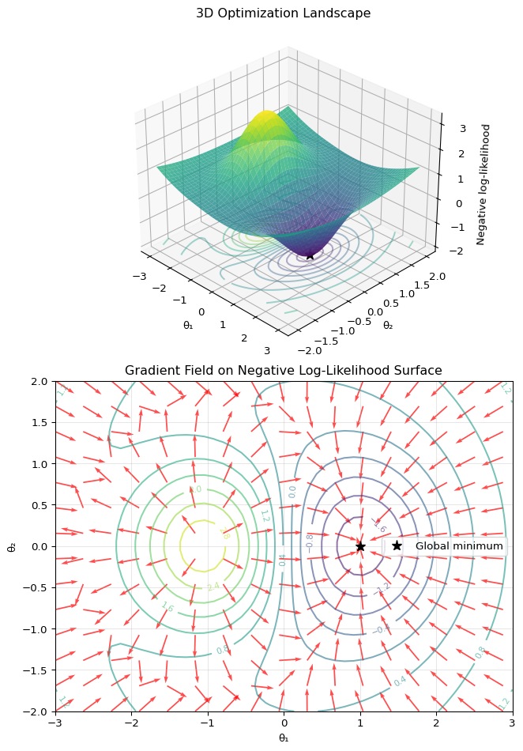
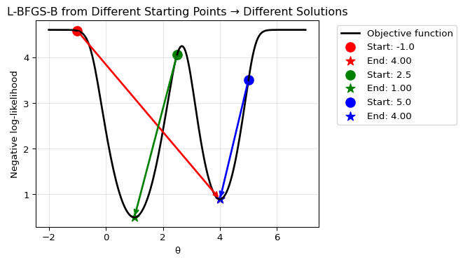

After completing this chapter, you will be able to:
Define a parametric model and explain its role in statistical inference, distinguishing between parameters of interest and nuisance parameters.
Derive estimators using the Method of Moments (MoM) by equating theoretical and sample moments.
Explain the principle of Maximum Likelihood Estimation (MLE) and formulate the likelihood and log-likelihood functions for a given model.
Find the Maximum Likelihood Estimator (MLE) analytically in simple cases by maximizing the (log-)likelihood.
Explain when and why numerical optimization is necessary for MLE, and apply standard optimization libraries to find estimators computationally.
Note
This chapter covers parametric models and two fundamental approaches to finding estimators: the Method of Moments and Maximum Likelihood Estimation. The material is adapted from Chapter 9 of Wasserman (2013) and supplemented with computational examples and optimization techniques relevant to modern data science applications.
5.2 Introduction: Machine Learning As Statistical Estimation
When fitting a machine learning model f(x, \theta) for regression with inputs x_i and targets y_i, i = 1, \dots, n, a common approach is to minimize the mean squared error (MSE): \min_{\theta} \frac{1}{n} \sum_{i=1}^n \left( f(x_i, \theta) - y_i \right)^2.
The terms in this expression are similar to the log-probability of a normal distribution: \log \mathcal{N}(y_i;\; f(x_i, \theta), \sigma^2) = -\frac{1}{2}\log(2\pi \sigma^2) - \frac{1}{2 \sigma^2} \left( f(x_i, \theta) - y_i \right)^2.
This similarity is not a coincidence. When \sigma is constant, maximizing the log-likelihood means maximizing -\frac{1}{2\sigma^2} \sum_i (f(x_i, \theta) - y_i)^2 plus a constant – which is equivalent to minimizing the MSE.
The ML-Statistics Connection
When you minimize MSE in machine learning, you’re performing maximum likelihood estimation under a Gaussian noise assumption! This connection reveals a fundamental truth: many machine learning algorithms are secretly (or openly) solving statistical estimation problems.
This chapter introduces the foundational principles of parametric inference – the engine that powers both classical statistics and modern machine learning. We’ll learn two primary methods for finding estimators for model parameters: the Method of Moments and the celebrated Maximum Likelihood Estimation.
Finnish Terminology Reference
For Finnish-speaking students, here’s a reference table of key terms in this chapter:
English
Finnish
Context
Parametric model
Parametrinen malli
Models with finite parameters
Parameter of interest
Kiinnostuksen parametri
The quantity we want to estimate
Nuisance parameter
Kiusaparametri
Parameters not of primary interest
Method of Moments (MoM)
Momenttimenetelmä
Estimation by matching moments
Moment
Momentti
Expected value of powers
Sample moment
Otosmomentti
Empirical average of powers
Maximum Likelihood Estimation (MLE)
Suurimman uskottavuuden menetelmä
Most common estimation method
Likelihood function
Uskottavuusfunktio
Joint density as function of parameters
Log-likelihood function
Log-uskottavuusfunktio
Logarithm of likelihood
Maximum Likelihood Estimator
SU-estimaattori
Parameter maximizing likelihood
Numerical optimization
Numeerinen optimointi
Computational methods for finding optima
Gradient
Gradientti
Vector of partial derivatives
Gradient descent
Gradienttimenetelmä
Iterative optimization algorithm
5.3 Parametric Models
We introduced parametric models in Chapter 3 when discussing statistical inference frameworks. Recall that in the world of statistical inference, we often make assumptions about the structure of our data-generating process. A parametric model is one such assumption – it postulates that our data comes from a distribution that can be fully characterized by a finite number of parameters.
Now that we’re diving into estimation methods, let’s revisit this concept with a focus on how we actually find these parameters.
A parametric model is a set of distributions \mathfrak{F} = \{ f(x; \theta) : \theta \in \Theta \} where:
\theta = (\theta_1, \ldots, \theta_k) is the parameter (possibly vector-valued)
\Theta \subseteq \mathbb{R}^k is the parameter space (the set of all possible parameter values)
f(x; \theta) is the density or distribution function indexed by \theta
The key insight: We assume the data-generating process belongs to a specific family of distributions, and our job is just to find the right parameter \theta within that family.
In other words, the problem of inference reduces to estimating the parameter(s) \theta.
All Models Are Wrong, But Some Are Useful
Parametric models are widely used although the underlying models are usually not perfect. As the statistician George Box famously said – in what is possibly the most repeated quote in statistics – “All models are wrong, but some are useful.”
When the model is good enough, parametric models can be very useful because they offer a simple representation for potentially complex phenomena. The art of statistical modeling is finding a model that is wrong in acceptable ways while still capturing the essential features of your data.
Examples of Parametric Models:
Simple distributions:
Bernoulli(p): One parameter determining success probability
Poisson(\lambda): One parameter determining both mean and variance
Normal(\mu, \sigma^2): Two parameters for location and scale
Regression models:
Linear regression: Y = \beta_0 + \beta_1 X + \epsilon where \epsilon \sim N(0, \sigma^2)
Parameter of interest: T(\alpha, \beta) = \mathbb{E}(X) = \alpha\beta
Nuisance parameters: The individual shape (\alpha) and scale (\beta) parameters
Note that we must estimate both parameters, but only their product matters for our question.
5.4 The Method of Moments (MoM)
The Method of Moments is a simple estimation technique that does not yield optimal estimators, but provides easy-to-compute values that can serve as good starting points for more sophisticated methods.
5.4.1 The Principle: Matching Moments
The Method of Moments is based on a straightforward idea: if our model is correct, then theoretical properties of the distribution (moments) should match their empirical counterparts in the data. It’s like saying, “If this really is the right distribution, then the average I calculate from my model should match the average I see in my data.”
For a model with parameter \theta = (\theta_1, \ldots, \theta_k):
The j^{\text{th}}theoretical moment is: \alpha_j(\theta) = \mathbb{E}_{\theta}(X^j)
The j^{\text{th}}sample moment is: \hat{\alpha}_j = \frac{1}{n} \sum_{i=1}^n X_i^j
The Method of Moments estimator\hat{\theta}_n is the value of \theta such that: \begin{align}
\alpha_1(\hat{\theta}_n) &= \hat{\alpha}_1 \\
\alpha_2(\hat{\theta}_n) &= \hat{\alpha}_2 \\
&\vdots \\
\alpha_k(\hat{\theta}_n) &= \hat{\alpha}_k
\end{align}
This gives us a system of k equations with k unknowns – exactly what we need to solve for k parameters!
5.4.2 MoM in Action: Examples
Example: Bernoulli Distribution
For X_1, \ldots, X_n \sim \text{Bernoulli}(p), we have one parameter to estimate.
Theoretical first moment: \alpha_1(p) = \mathbb{E}_p(X) = p
Sample first moment: \hat{\alpha}_1 = \frac{1}{n}\sum_{i=1}^n X_i = \bar{X}_n
Equating them: p = \bar{X}_n
Therefore, the MoM estimator is \hat{p}_{\text{MoM}} = \bar{X}_n – simply the proportion of successes!
Example: Normal Distribution
For X_1, \ldots, X_n \sim \mathcal{N}(\mu, \sigma^2), we have two parameters, so we need two equations.
A two-parameter family has two knobs; the Method of Moments turns them until the moments of the model land on the moments of the data. In the demonstration below, you turn the knobs yourself.
The left panel shows a fixed dataset of n = 100 observations, shown as a histogram, together with the density of the model at your current parameter values. The right panel shows moment space: the horizontal axis is the mean (first moment), the vertical axis is the variance (second moment), the blue marker is the pair (sample mean, sample variance) computed from the data, and the red marker is the pair (mean, variance) of your current model.1 Your goal is to steer the red marker onto the blue one.
Goal: Find the MoM estimate! That’s the one setting of the two sliders where the model marker sits exactly on the data marker.
Under regular conditions, Method of Moments estimators have some desirable properties:
Let \hat{\theta}_n denote the method of moments estimator. Under appropriate conditions on the model, the following statements hold:
Existence: The estimate \hat{\theta}_n exists with probability tending to 1.
Consistency: The estimate is consistent: \hat{\theta}_n \xrightarrow{P} \theta
Asymptotic Normality: The estimate is asymptotically Normal: \sqrt{n}(\hat{\theta}_n - \theta) \rightsquigarrow N(0, \Sigma) where \Sigma = g \, \mathrm{Cov}_{\theta}(Y) \, g^T. Here Y = (X, X^2, \ldots, X^k)^T collects the first k powers of one observation, and g is the matrix of derivatives of the solution of the moment equations with respect to the moments.2
Each ingredient has a plain reading. The sample moments are averages, so the central limit theorem says how much they vary from sample to sample, and that is \mathrm{Cov}_{\theta}(Y). The estimate is what you get by solving the moment equations for \theta, so g says how far that solution moves when the moments move. Variability in the moments, magnified by the sensitivity of the solution, is the variability of \hat{\theta}_n.
The last result can yield confidence intervals, but bootstrap is usually easier.
How Good are MoM Estimators?
Strengths:
Simple to compute – just solve algebraic equations!
Guaranteed existence and consistency under mild conditions
Not efficient: Other estimators (like MLE) typically have smaller variance
May give impossible values: Can produce estimates outside the parameter space
Arbitrary: Why use moments? Why not other features of the distribution?
Primary Use Case: MoM estimators are excellent starting values for more sophisticated methods like maximum likelihood estimation, which often require numerical optimization.
5.5 Maximum Likelihood Estimation (MLE)
5.5.1 The Principle: What Parameter Makes My Data Most Probable?
Maximum Likelihood Estimation is arguably the most important estimation method in statistics. While the Method of Moments asks “what parameters make the theoretical moments match the empirical ones?”, MLE asks a more direct question: “what parameter values make my observed data most plausible?”
The elegance of MLE is that it reverses our usual probability thinking:
Probability: Given parameters, what data would we expect to see?
Likelihood: Given data, which parameters make this data most probable?
5.5.2 The Likelihood Function
The mathematical object at the core of MLE is the likelihood function.
Let X_1, \ldots, X_n be IID with PDF f(x; \theta).
The likelihood function is: \mathcal{L}_n(\theta) = \prod_{i=1}^n f(X_i; \theta)
For both mathematical and numerical convenience, in practice we often work with the log-likelihood function: \ell_n(\theta) = \log \mathcal{L}_n(\theta) = \sum_{i=1}^n \log f(X_i; \theta)
The Maximum Likelihood Estimator (MLE) is: \hat{\theta}_{\text{MLE}} = \arg\max_{\theta \in \Theta} \mathcal{L}_n(\theta) = \arg\max_{\theta \in \Theta} \ell_n(\theta)
Note that maximizing the likelihood is the same as maximizing the log-likelihood, since the logarithm is a strictly increasing (monotonic) function.
Likelihood is a “what if” game. Imagine you have a coin and you flip
it 10 times, getting 7 heads. You ask yourself:
“What if the probability of heads were 0.5? How likely would 7 heads
in 10 flips be?” “What if the probability were 0.6? Would that make my
data more or less likely?” “What if it were 0.7? 0.8?”
For each possible value of the parameter (here, the probability of
heads), you calculate how probable your exact observed data would be.
The parameter value that maximizes this probability is your maximum
likelihood estimate.
The likelihood function is this “what if” calculation formalized –
it’s the probability (or probability density) of your observed data,
treated as a function of the unknown parameters.
Why do we often prefer working with the log-likelihood?
Differentiation: For exponential
family distributions (normal, exponential, gamma, etc.), log
derivatives eliminate exponentials. For example, for normal:
\(\frac{d}{d\mu} e^{-(x-\mu)^2/2}\)
becomes just \((x-\mu)\) after taking
logs
Numerical stability: Products of small
probabilities underflow; sums of logs don’t
Additive structure: Log-likelihood is a sum over
observations, making derivatives and optimization more
tractable
Let’s visualize the likelihood function for a simple Bernoulli
example:
import numpy as npimport matplotlib.pyplot as plt# Simulate coin flips: n=20, observed 12 successesn =20successes =12# Define the log-likelihood functionp_values = np.linspace(0.01, 0.99, 200)log_likelihood = successes * np.log(p_values) + (n - successes) * np.log(1- p_values)# Find the MLE (exact analytical solution)p_mle = successes / n # Exact MLE for Bernoulli# Create the plotplt.figure(figsize=(7, 4))plt.plot(p_values, log_likelihood, 'b-', linewidth=2)plt.axvline(p_mle, color='red', linestyle='--', linewidth=2, label=f'MLE: p̂ = {p_mle}')plt.xlabel('p')plt.ylabel('Log-likelihood ℓₙ(p)')plt.title(f'Log-likelihood for Bernoulli with n={n}, S={successes}')plt.legend()plt.grid(True, alpha=0.3)plt.tight_layout()plt.show()print(f"Maximum likelihood estimate: p̂ = {successes/n}")print(f"This makes intuitive sense: it's simply the observed proportion of successes!")

Maximum likelihood estimate: p̂ = 0.6
This makes intuitive sense: it's simply the observed proportion of successes!
Notice how the log-likelihood is maximized exactly at the observed
proportion of successes. This is no coincidence – the MLE often has an
intuitive interpretation.
Important: Likelihood function is NOT a probability distribution!
The likelihood \mathcal{L}_n(\theta) is NOT a probability distribution over \theta. In general: \int_\Theta \mathcal{L}_n(\theta) d\theta \neq 1
Why? The same mathematical expression f(x; \theta) plays two different roles:
As a PDF: Fix \theta, vary x → \int f(x; \theta) dx = 1 (proper probability distribution)
As a likelihood: Fix x (observed data), vary \theta → \int \mathcal{L}_n(\theta) d\theta is usually not 1
Example: Observe one coin flip with result X = 1 (heads) from Bernoulli(p):
The likelihood is \mathcal{L}(p) = p for p \in [0,1]
\int_0^1 p \, dp = \frac{1}{2} \neq 1
The likelihood tells us relative plausibility of parameter values, not their probabilities. This is why we need Bayesian methods if we want actual probability distributions over parameters!
5.5.3 Finding the MLE Analytically
For simple models, we can find the MLE by taking derivatives and setting them to zero. The general recipe:
Write down the likelihood \mathcal{L}_n(\theta)
Take the logarithm to get \ell_n(\theta) (this simplifies products to sums)
Take the derivative with respect to \theta
Set equal to zero and solve
Verify it’s a maximum (not a minimum or saddle point)
Simplifying MLE Calculations
When finding the MLE, multiplying the likelihood (or log-likelihood) by a positive constant or adding a constant doesn’t change where the maximum occurs. This means we can often ignore:
Normalization constants that don’t depend on \theta
Terms like \frac{1}{(2\pi)^{n/2}} in the normal distribution
Factorials in discrete distributions
This greatly simplifies calculations – focus only on terms involving \theta!
Let’s work through some examples:
Example: Bernoulli Distribution
For X_1, \ldots, X_n \sim \text{Bernoulli}(p):
Step 1: The likelihood is \mathcal{L}_n(p) = \prod_{i=1}^n p^{X_i}(1-p)^{1-X_i} = p^S(1-p)^{n-S} where S = \sum_{i=1}^n X_i is the total number of successes.
Step 2: The log-likelihood is \ell_n(p) = S \log p + (n-S) \log(1-p)
Step 3: Taking the derivative: \frac{d\ell_n}{dp} = \frac{S}{p} - \frac{n-S}{1-p}
Step 4: Setting to zero and solving: \frac{S}{p} = \frac{n-S}{1-p} \implies S(1-p) = (n-S)p \implies S = np
Is 0 when \theta is less than the largest observation
Decreases as (1/\theta)^n for larger \theta
Therefore, the likelihood is maximized at the boundary: \hat{\theta}_{\text{MLE}} = X_{(n)} = \max\{X_1, \ldots, X_n\}.
This example shows that not all optimization problems are solved by calculus – sometimes we need to think more carefully about the function’s behavior!
Finding the maximum of the log-likelihood by taking a derivative and setting it to zero is clean and satisfying, but it only works for the simplest models. For most real-world problems, the log-likelihood function is a complex, high-dimensional surface, and we cannot find the peak analytically.
Instead, we must turn to numerical optimization. The core idea of most optimization algorithms is simple: we start with an initial guess for the parameters, \theta_0, and then iteratively take steps “uphill” on the likelihood surface until we can no longer find a higher point.
This section explores the concepts and tools behind this fundamental process.3
The Need for Numerical Methods
For many important models, we cannot solve for the MLE analytically:
Logistic regression: No closed-form solution for the regression coefficients
Mixture models: Complex likelihood with multiple local maxima
Most complex ML models: Neural networks, random forests, etc.
We must use iterative numerical optimization algorithms to find the maximum of the likelihood function (or minimum of the negative log-likelihood).
5.6.1 The Optimization Setup for MLE
Finding the MLE requires solving an optimization problem to find the parameters \theta that maximize the likelihood function \mathcal{L}_n(\theta) or equivalently the log-likelihood function \ell_n(\theta).
Since optimization methods in software libraries are conventionally written to perform minimization, our practical goal becomes:
This is a crucial point: we minimize the negative log-likelihood. Forgetting this minus sign is one of the most common programming errors in statistical computing!
Throughout this section, we’ll follow the standard convention and present algorithms for minimization. We’ll use examples from Python’s scipy.optimize, but other languages and libraries (R’s optim, Julia’s Optim.jl, etc.) offer similar algorithms with comparable interfaces.
When in optimization we say that a problem is D-dimensional, we refer to the number of variables being optimized over – here, the number of elements of \theta.
5.6.2 Numerical Optimization in 1D
To understand how numerical optimization works, it’s helpful to start with the simplest case: finding the minimum of a function with a single parameter, f(\theta).
whose global minimum is at \theta^\star \approx 1.71.

How can a computer find the minimum of this function? There are two main families of approaches.
1D Optimization without Derivatives
The simplest algorithms work by bracketing the minimum. If you can find three points (a, c, b) such that a < c < b and f(c) < f(a) and f(c) < f(b), you know a minimum lies somewhere in the interval (a, b).
Golden-section search: A simple but robust method that is analogous to binary search for finding a root. It progressively narrows the bracket until the desired precision is reached.
Brent’s method: A more sophisticated and generally preferred method. It combines the guaranteed (but slow) progress of golden-section search with the potentially faster convergence of fitting a parabola to the three points and jumping to the minimum of the parabola.
These methods are useful when the function’s derivative is unavailable or unreliable.
1D Optimization with Derivatives: Newton’s Method
If we can compute derivatives, we can often find the minimum much faster. The most famous derivative-based method is Newton’s method (or Newton-Raphson).
The idea is to iteratively approximate the function with a quadratic and jump to the minimum of that quadratic. A second-order Taylor expansion of f(\theta) around a point \theta_t is: f(\theta) \approx f(\theta_t) + f'(\theta_t) (\theta - \theta_t) + \frac{1}{2} f''(\theta_t) (\theta - \theta_t)^2.
To find the minimum of this quadratic approximation, we take its derivative with respect to \theta and set it to zero: \frac{d}{d\theta} (\text{approx}) = f'(\theta_t) + f''(\theta_t)(\theta - \theta_t) = 0
Solving for \theta gives us the next point in our iteration, \theta_{t+1}: \theta_{t+1} = \theta_t - \frac{f'(\theta_t)}{f''(\theta_t)}.
This simple update rule is the core of Newton’s method. When close to a well-behaved minimum, it converges very rapidly (quadratically). However, it can be unstable if the function is not “nice” or if the starting point is far from the minimum.
The first step falls short of the minimum. The quadratic approximation uses the curvature at \theta_t = 1, which is much larger than the curvature near the minimum, so the parabola is narrower than f and bottoms out early. The following steps home in quickly, as the printed iterates show.
Example: 1D Optimization in scipy
Let’s find the minimum of our example function using scipy.optimize. We’ll use Brent’s method, which only requires the function itself and a bracket.
Show code
import numpy as npimport scipy.optimizedef f(theta):return theta**2/10+1/theta# Find the minimum using Brent's method# We need to provide a bracket (a, b) or (a, c, b)# where the minimum is expected to lie.# Let's use (0.1, 10.0)result = scipy.optimize.brent(f, brack=(0.1, 10.0))print(f"The minimum found by Brent's method is at θ = {result:.6f}")print(f"The value of the function at the minimum is f(θ) = {f(result):.6f}")# Analytical minimum is at (5)^(1/3)analytical_min =5**(1/3)print(f"The analytical minimum is at θ = {analytical_min:.6f}")
The minimum found by Brent's method is at θ = -0.000000
The value of the function at the minimum is f(θ) = -456934496164.231018
The analytical minimum is at θ = 1.709976
The output shows that the numerical method finds the correct minimum with high precision.
Moving to Multiple Dimensions
The concepts from 1D optimization extend to the multi-dimensional case, but with added complexity.
Derivative-free methods:
Generalizing derivative-free methods to multiple dimensions, i.e., optimizing f(\theta_1, \ldots, \theta_n) with respect to \theta_1, \ldots, \theta_n is hard! As the dimensionality increases, the number of possible directions that need to be searched for the optimum grows very rapidly.
Classical approaches: Very old algorithms like direct search methods are mostly inefficient and struggle as dimensionality grows. Searching in many directions at once becomes prohibitively expensive.
Modern approaches: Recent methods can be more effective in specific scenarios:
Bayesian optimization: Works well in low dimensions (typically < 20) and can be very sample-efficient when function evaluations are expensive
CMA-ES (Covariance Matrix Adaptation Evolution Strategy): If you can afford many function evaluations and don’t have gradients, this method can work in surprisingly high dimensions – up to tens of thousands of parameters
These methods are mainly used when gradients are unavailable or unreliable (e.g., noisy simulations, black-box models)
Derivative-based methods:
The standard choice: When gradients are available and the function is relatively inexpensive to evaluate, gradient-based methods dominate
Scalability: These methods can handle problems with millions or even billions of parameters (think deep neural networks)
Key transformation: The first derivative (slope) becomes the gradient (\nabla f), and the second derivative (curvature) becomes the Hessian matrix (H)
Why they work: Gradient information provides a principled direction for improvement at each step, making the search much more efficient than blind exploration
You can find visualizations of several optimization algorithms at work here.
5.6.3 The Gradient: The Key to Multidimensional Optimization
The main tool for optimization of multidimensional functions
Here \frac{\partial f}{\partial \theta_i} is the partial derivative of f with respect to \theta_i. It can be evaluated by computing the derivative w.r.t. \theta_i while keeping the other variables constant.
Geometric interpretation: The gradient points in the direction where the function values grow fastest. Its magnitude measures the rate of change in that direction.
Intuition: The Gradient as a Compass
Think of finding the MLE as hiking blindfolded on a hilly terrain (the negative log-likelihood surface). At each point, the gradient tells you which direction is steepest uphill. Since we want to minimize, we go in the opposite direction – downhill.
Let’s visualize this concept:
Show code
import numpy as npimport matplotlib.pyplot as pltfrom mpl_toolkits.mplot3d import Axes3D# Create a 2D function with interesting topology (negative log-likelihood surface)def f(x, y):"""Example negative log-likelihood with two local minima"""return-2* np.exp(-(x-1)**2- y**2) +3* np.exp(-(x+1)**2- y**2) +0.1*(x**2+ y**2)# Create gridx = np.linspace(-3, 3, 50)y = np.linspace(-2, 2, 40)X, Y = np.meshgrid(x, y)Z = f(X, Y)# Create figure with two subplotsfig = plt.figure(figsize=(7, 10))# First subplot: 3D surfaceax1 = fig.add_subplot(2, 1, 1, projection='3d')surf = ax1.plot_surface(X, Y, Z, cmap='viridis', alpha=0.8, edgecolor='none')ax1.contour(X, Y, Z, levels=15, cmap='viridis', offset=Z.min(), alpha=0.4)# Mark the global minimumax1.scatter([1], [0], [f(1, 0)], color='black', s=100, marker='*', label='Global minimum')ax1.set_xlabel('θ₁')ax1.set_ylabel('θ₂')ax1.set_zlabel('Negative log-likelihood')ax1.set_title('3D Optimization Landscape')# Adjust viewing angle to swap visual perspectiveax1.view_init(elev=30, azim=-45)# Second subplot: 2D contour with gradient fieldax2 = fig.add_subplot(2, 1, 2)# Compute gradient (numerically)dx =0.01dy =0.01grad_x = (f(X + dx, Y) - f(X - dx, Y)) / (2* dx)grad_y = (f(X, Y + dy) - f(X, Y - dy)) / (2* dy)# Normalize gradient vectors for better visualizationgrad_norm = np.sqrt(grad_x**2+ grad_y**2)grad_x_norm =-grad_x / (grad_norm +1e-10) # Negative for descentgrad_y_norm =-grad_y / (grad_norm +1e-10)# Contour plotcontour = ax2.contour(X, Y, Z, levels=15, cmap='viridis', alpha=0.6)ax2.clabel(contour, inline=True, fontsize=8)# Gradient vectorsskip =3# Show every 3rd arrow for clarityax2.quiver(X[::skip, ::skip], Y[::skip, ::skip], grad_x_norm[::skip, ::skip], grad_y_norm[::skip, ::skip], scale=20, alpha=0.7, width=0.003, color='red')# Mark global minimumax2.plot([1], [0], 'k*', markersize=10, label='Global minimum')ax2.set_xlabel('θ₁')ax2.set_ylabel('θ₂')ax2.set_title('Gradient Field on Negative Log-Likelihood Surface')ax2.legend()ax2.grid(True, alpha=0.3)plt.tight_layout()plt.show()

These visualizations show:
Top (3D): The optimization landscape as a surface, showing the “hills and valleys” that optimization algorithms must navigate
Bottom (2D): The same landscape from above with:
Contour lines showing level sets of the negative log-likelihood
Red arrows pointing in the direction of steepest descent (negative gradient)
Black star marking the global minimum at θ₁ = 1, θ₂ = 0
Note how the gradient vectors always point toward lower values, guiding optimization algorithms downhill
5.6.4 Evaluating the Gradient
The first practical challenge in using gradients for optimization is how to evaluate the gradient. There are three main approaches:
Analytically: Derive by hand and implement – fast but error-prone
Finite differences: Approximate numerically by evaluating nearby points – easy but expensive4 and less precise
Automatic differentiation (autodiff): Best of both worlds – exact, fast and automatic
Modern frameworks like PyTorch and JAX make automatic differentiation the preferred choice. However, some older languages such as R still lack full autodiff support. Gradient computation usually uses backward-mode autodiff, which is suitable for computing derivatives of real-valued functions f: \mathbb{R}^n \to \mathbb{R}.
Example: Gradients in Python with JAX
Here’s how to compute gradients automatically using JAX:
import jax.numpy as jnpimport jaxdef f(theta):return theta**2/10+1/thetag = jax.grad(f)g(1.5) # Evaluating at a scalar value# For multiple variables:def f2(theta):return (jnp.exp(-(theta[0]-1)**2- theta[1]**2)- jnp.exp(-(theta[0]+1)**2- theta[1]**2))g2 = jax.grad(f2)g2(jnp.array([-3.0, 0.5]))
5.6.5 Gradient-Based Optimization Methods
Once we have gradients, we can use various algorithms to find the optimum.
The simplest gradient-based algorithm is gradient descent (also called steepest descent), which iteratively takes steps in the direction of the negative gradient:
\theta_{t+1} = \theta_t - \eta \nabla f(\theta_t)
where \eta > 0 (eta) is the learning rate, which defines the step length.
Gradient descent is inefficient, often zigzagging toward the optimum, but it’s the foundation for understanding more sophisticated methods.
Advanced Gradient-Based Methods
Beyond basic gradient descent, there are many sophisticated optimization algorithms:
Classical improvements:
Conjugate gradient methods: Choose search directions that are conjugate with respect to the Hessian matrix. For quadratic functions, this guarantees finding the exact minimum in at most n steps (where n is the number of dimensions). Unlike gradient descent which can take tiny steps in nearly orthogonal directions, conjugate gradient methods take larger, more efficient steps.
Quasi-Newton methods: Approximate the Hessian matrix without computing second derivatives directly.
BFGS (Broyden-Fletcher-Goldfarb-Shanno): Builds up an approximation to the inverse Hessian using gradient information from previous steps
L-BFGS (Limited-memory BFGS): Stores only a few vectors instead of the full Hessian approximation, making it practical for high-dimensional problems
Modern methods:
Momentum methods (heavy ball method): Add a fraction of the previous step to the current gradient step: \theta_{t+1} = \theta_t - \eta \nabla f(\theta_t) + \beta(\theta_t - \theta_{t-1}) where \beta \in [0, 1) is the momentum coefficient. This helps the optimizer “roll through” small local variations and reduces zigzagging in narrow valleys.
Accelerated gradient methods: Achieve provably faster convergence rates. Nesterov’s accelerated gradient has convergence rate O(1/t^2) compared to O(1/t) for standard gradient descent on convex functions.
These methods are especially important in deep learning where simple gradient descent would be too slow to navigate the complex, high-dimensional loss landscapes of neural networks.
5.6.6 Stochastic Gradient Methods
Many machine learning problems, especially in deep learning, involve optimizing functions of the form:
BADS (Bayesian Adaptive Direct Search): Combines Bayesian optimization with mesh adaptive direct search, good for noisy and mildly expensive functions with D < 20
Advanced Topic: Constrained Optimization
Often parameters have natural constraints:
Standard deviations must be positive: \sigma > 0
Probabilities must be in [0,1]: 0 \leq p \leq 1
Correlation matrices must be positive definite
How do we enforce these? There are typically three different approaches:
Reparameterization: Optimize \phi = \log \sigma and then use \sigma = e^\phi to ensure positivity5
Constrained optimization: Use algorithms like L-BFGS-B that allows you to specify parameter bounds
Barrier methods: Add penalty terms that blow up at boundaries (can be unstable – not recommended)
Whichever approach you use, think about two kinds of bounds. Hard bounds are the limits you pass to the optimizer. Set them no wider than the physically meaningful range rather than at the mathematical limits: a standard deviation is bounded below by the resolution of the measurement, not by zero, and above by the spread of the data. Plausible bounds are the narrower range within which you expect almost all solutions to lie. They are the natural region from which to draw starting points when running the optimizer several times.
Example: 2D MLE with Numerical Optimization
Now let’s apply the multidimensional optimization concepts to a real statistical problem. We’ll estimate both parameters of a Gamma distribution, which provides an excellent illustration of:
True 2D optimization: Unlike our 1D examples, we need to simultaneously find the shape parameter \alpha and scale parameter \beta.
Constrained optimization in practice: Both parameters must be positive, so we’ll use L-BFGS-B with bounds.
The importance of starting values: We’ll launch optimization from multiple starting points to see if they converge to the same solution. We choose the first starting point using the Method of Moments, while the others arbitrarily (could have been random).
Visualizing the likelihood surface: We’ll create both 3D and contour plots to understand the optimization landscape.
The Gamma distribution is particularly interesting because its two parameters interact in the likelihood function, creating a curved valley in the likelihood surface rather than a simple bowl.
Show code
import numpy as npimport matplotlib.pyplot as pltfrom scipy import stats, optimizefrom mpl_toolkits.mplot3d import Axes3D# Generate data from Gamma distributionnp.random.seed(42)true_alpha =3.0# shape parametertrue_beta =2.0# scale parametern =100data = stats.gamma.rvs(a=true_alpha, scale=true_beta, size=n)# Define negative log-likelihood for Gamma(α, β)def neg_log_likelihood(params, data):"""Negative log-likelihood for Gamma distribution""" alpha, beta = paramsif alpha <=0or beta <=0:return np.inf # Return infinity for invalid parametersreturn-np.sum(stats.gamma.logpdf(data, a=alpha, scale=beta))# Method of Moments starting valuessample_mean = np.mean(data)sample_var = np.var(data)mom_beta = sample_var / sample_meanmom_alpha = sample_mean / mom_beta# Try optimization from different starting pointsstarting_points = [ [mom_alpha, mom_beta], # MoM estimate [1.0, 1.0], # Generic start [5.0, 5.0], # Far from truth]# Store optimization pathspaths = []results = []for i, start inenumerate(starting_points):# Create a list to store the path for this optimization path = []# Callback function to record each iterationdef callback(xk): path.append(xk.copy()) result = optimize.minimize( fun=neg_log_likelihood, x0=start, args=(data,), method='L-BFGS-B', bounds=[(0.01, None), (0.01, None)], # Enforce positivity callback=callback )# Add starting point to path full_path = [np.array(start)] + path paths.append(np.array(full_path)) results.append(result)print(f"Start {i+1}: {start} → MLE: [{result.x[0]:.3f}, {result.x[1]:.3f}], "f"NLL: {result.fun:.3f}, Iterations: {len(full_path)-1}")# Best resultbest_result =min(results, key=lambda r: r.fun)mle_alpha, mle_beta = best_result.x# Visualize the likelihood surfacealpha_range = np.linspace(0.5, 6, 50)beta_range = np.linspace(0.5, 5.2, 50)Alpha, Beta = np.meshgrid(alpha_range, beta_range)NLL = np.zeros_like(Alpha)for i inrange(Alpha.shape[0]):for j inrange(Alpha.shape[1]): NLL[i, j] = neg_log_likelihood([Alpha[i, j], Beta[i, j]], data)fig = plt.figure(figsize=(7, 10))# 3D surface plotax1 = fig.add_subplot(2, 1, 1, projection='3d')surf = ax1.plot_surface(Alpha, Beta, NLL, cmap='viridis', alpha=0.8, edgecolor='none')ax1.contour(Alpha, Beta, NLL, levels=20, cmap='viridis', offset=NLL.min(), alpha=0.4)# Mark the different solutionsax1.scatter([true_alpha], [true_beta], [neg_log_likelihood([true_alpha, true_beta], data)], color='black', s=100, marker='*', label='True parameters')ax1.scatter([mle_alpha], [mle_beta], [best_result.fun], color='red', s=100, marker='o', label='MLE')ax1.set_xlabel('α (shape)')ax1.set_ylabel('β (scale)')ax1.set_zlabel('Negative log-likelihood')ax1.set_title('Likelihood Surface for Gamma Distribution')ax1.view_init(elev=25, azim=45)# 2D contour plot with optimization pathsax2 = fig.add_subplot(2, 1, 2)contour = ax2.contour(Alpha, Beta, NLL, levels=30, cmap='viridis', alpha=0.6)ax2.clabel(contour, inline=True, fontsize=8)# Plot optimization pathscolors = ['blue', 'green', 'orange']for i, (path, color) inenumerate(zip(paths, colors)):# Plot the full optimization path ax2.plot(path[:, 0], path[:, 1], '-', color=color, linewidth=2, alpha=0.7)# Mark start point ax2.plot(path[0, 0], path[0, 1], 'o', color=color, markersize=10, label=f'Start {i+1}')# Mark intermediate points ax2.plot(path[1:-1, 0], path[1:-1, 1], '.', color=color, markersize=6)# Mark end point ax2.plot(path[-1, 0], path[-1, 1], 's', color=color, markersize=10)ax2.plot(true_alpha, true_beta, 'k*', markersize=12, label='True')ax2.plot(mle_alpha, mle_beta, 'ro', markersize=10, label='MLE')ax2.set_xlabel('α (shape)')ax2.set_ylabel('β (scale)')ax2.set_title('L-BFGS Optimization Traces from Different Starting Points')ax2.legend()ax2.grid(True, alpha=0.3)plt.tight_layout()plt.show()print(f"\nTrue parameters: α = {true_alpha}, β = {true_beta}")print(f"MLE estimates: α = {mle_alpha:.3f}, β = {mle_beta:.3f}")print(f"MoM estimates: α = {mom_alpha:.3f}, β = {mom_beta:.3f}")
Notice how all three starting points converged to the same MLE, demonstrating that this likelihood surface is well-behaved with a single global optimum. The actual L-BFGS traces (with intermediate points marked as dots) reveal interesting optimization behavior:
Blue path (MoM start): Converges in very few iterations since it starts close to the optimum
Green path (generic start): Takes a curved path following the likelihood valley
Orange path (far start): Makes larger initial steps, then follows the contours more carefully as it approaches the optimum
The 3D plot reveals the characteristic curved valley of the Gamma likelihood, explaining why the optimization paths curve rather than taking straight lines to the optimum.
5.6.8 FAQ: Common Issues in Numerical Optimization
Frequently Asked Questions
Q: I used a minimizer, but I’m supposed to be doing maximum likelihood. What gives?
A: A classic source of confusion! Maximizing a function f(x) is equivalent to minimizing its negative -f(x). All standard optimization libraries are built as minimizers. Therefore, in practice, we always find the MLE by minimizing the negative log-likelihood function.
Q: I tried different starting points and the optimizer gave different answers. Is it broken?
A: No, this is expected behavior! The algorithms we use are local optimizers. They find a valley (a local minimum), usually but not always the nearest one, and they have no guarantee of finding the deepest valley (global minimum). If your likelihood surface has multiple local optima, the result will depend on your starting point. This is why using a good initial value (like the Method of Moments estimate!) is so important, and why you should always run the optimizer from several starting points and keep the best solution.
Q: How do I know if the algorithm has actually converged to the right answer?
A: In general, you don’t know with 100% certainty. Optimizers use heuristics, like stopping when the change in the parameter values or the likelihood is very small. Good practices include:
Always try different starting points! In low dimension, 3 to 5 restarts is a reasonable start; if their solutions disagree, add more.
Check the optimizer’s status messages
Verify that the gradient is near zero at the solution
Compare with simpler methods (like MoM) as a sanity check
Let’s demonstrate the importance of starting values by running L-BFGS-B from three different starting points on an artificial objective with two valleys:
Show code
# Example: Multiple local optima in a mixture model# We'll create a bimodal likelihood surfacedef bimodal_nll(theta):"""A negative log-likelihood with two local minima"""# Artificial example with two valleysreturn-np.log(0.6* np.exp(-2*(theta-1)**2) +0.4* np.exp(-3*(theta-4)**2) +0.01)# Try optimization from different starting pointstheta_range = np.linspace(-2, 7, 200)nll_surface = [bimodal_nll(t) for t in theta_range]starting_points = [-1, 2.5, 5]colors = ['red', 'green', 'blue']results = []plt.figure(figsize=(7, 4))plt.plot(theta_range, nll_surface, 'k-', linewidth=2, label='Objective function')for start, color inzip(starting_points, colors): result = optimize.minimize(bimodal_nll, x0=[start], method='L-BFGS-B') results.append(result.x[0]) plt.scatter([start], [bimodal_nll(start)], color=color, s=100, marker='o', label=f'Start: {start:.1f}') plt.scatter([result.x[0]], [result.fun], color=color, s=100, marker='*', label=f'End: {result.x[0]:.2f}')# Draw arrow from start to end plt.annotate('', xy=(result.x[0], result.fun), xytext=(start, bimodal_nll(start)), arrowprops=dict(arrowstyle='->', color=color, lw=2))plt.xlabel('θ')plt.ylabel('Negative log-likelihood')plt.title('L-BFGS-B from Different Starting Points → Different Solutions')plt.legend(bbox_to_anchor=(1.05, 1), loc='upper left')plt.grid(True, alpha=0.3)plt.tight_layout()plt.show()print("Starting points and their corresponding local optima:")for start, end inzip(starting_points, results):print(f" Start: {start:4.1f} → End: {end:.3f}")

Starting points and their corresponding local optima:
Start: -1.0 → End: 4.000
Start: 2.5 → End: 1.000
Start: 5.0 → End: 4.000
The two runs starting at \theta = 2.5 and \theta = 5, respectively, end up in the minimum corresponding to their valley. The run starting from \theta = -1, instead, jumps into the other valley… this is not a bug, and shows that optimization algorithms can behave unexpectedly even in a simple 1D example.
Why does the run from \theta = -1 end in the far valley?
Nothing went wrong. During the run that starts at \theta = -1, L-BFGS-B evaluated the objective at just three locations: the starting point \theta = -1, then \theta = 0, then \theta = 4, where it stopped. None of these lies in the valley around \theta = 1, so as far as the optimizer could tell, that valley did not exist. The question then becomes why it evaluated only those points.
L-BFGS-B, like other gradient-based methods above, works in two stages at each iteration. It first picks a direction (at the very first step, before it has any curvature information, simply the negative gradient), and a line search then decides how far to move along it. The line search only knows the function values and slopes at the points it tries. It accepts a step once the slope at the new point is small, that is, once the new point looks like a minimum along the line; otherwise it extends the step and tries again.
The slope at \theta = -1 points to the right but is tiny, since the start is on the flat plateau. With nothing else to go on, L-BFGS-B’s first trial step has a default length, which here lands at \theta = 0.
At \theta = 0 the function has dropped a lot, but the slope is much steeper than at the start. To the line search this reads as “still going downhill, the minimum is further ahead”, so it extends the step several-fold.
The longer step lands at \theta = 4, where the slope is zero. That is exactly what a minimum looks like from the optimizer’s point of view, so the step is accepted and the run stops.
Landing exactly on 4 is a coincidence of this example, but the behavior is general: starting on a flat region, a line search can jump straight past a nearby minimum. The optimizer does not see the landscape, and this is one more reason to run it from several starting points.
5.7 Chapter Summary and Connections
5.7.1 Key Concepts Review
We’ve explored two fundamental approaches to finding estimators in parametric models:
Parametric Models:
Assume data comes from a specific family of distributions \mathfrak{F} = \{f(x; \theta): \theta \in \Theta\}
Our job reduces to estimating the finite-dimensional parameter \theta
Often have parameters of interest and nuisance parameters
Method of Moments (MoM):
Match theoretical moments \mathbb{E}(X^j) with sample moments \frac{1}{n}\sum X_i^j
Simple to compute – just solve algebraic equations
Consistent and asymptotically normal
Not efficient, but excellent starting values for other methods
Maximum Likelihood Estimation (MLE):
Find parameters that make observed data most probable
Gradient-based methods dominate (L-BFGS for small data, SGD/Adam for large)
Automatic differentiation (JAX) makes implementation easier
Local optima are a real concern – always try multiple starting points!
5.7.2 The Big Picture
This chapter revealed a fundamental connection: much of modern machine learning is secretly Maximum Likelihood Estimation:
Linear regression: MLE with normal errors
Logistic regression: MLE for Bernoulli responses
Neural networks: MLE with complex parametric models
Deep learning: MLE with stochastic optimization
The principles we’ve learned – likelihood, optimization, gradients – are the foundation of both classical statistics and modern ML.
5.7.3 Common Pitfalls to Avoid
Confusing likelihood with probability: The likelihood is NOT a probability distribution over parameters
Forgetting the negative sign: Optimizers minimize, so use negative log-likelihood
Assuming analytical solutions exist: Most real problems require numerical methods
Trusting a single optimization run: Did I mention that you should always try multiple starting points?
Ignoring convergence warnings: Check optimizer status and diagnostics
5.7.4 Chapter Connections
Previous: Chapter 3 gave us convergence concepts and the framework for evaluating estimators. Now we know how to find estimators.
Next: Chapter 6 will explore the properties of these estimators in detail – bias, variance, efficiency – and prove that MLEs have optimal properties.
Bootstrap (Chapter 4): Provides a computational alternative to analytical standard errors for our estimators
Later chapters: These estimation principles extend to more complex models (regression, time series, etc.)
5.7.5 Self-Test Problems
Method of Moments: For X_1, \ldots, X_n \sim \text{Uniform}(-\theta, \theta) with \theta > 0, find the Method of Moments estimator for \theta. Why is the first moment equation of no use here?
Solution
The density is symmetric about zero, so \mathbb{E}(X) = 0 whatever \theta is. The first moment equation therefore reads 0 = \bar{X}_n, which contains no information about \theta, and we must go to the second moment. Since \mathbb{E}(X) = 0,
Nothing in this construction forces \hat{\theta}_{\text{MoM}} \geq \max_i |X_i|, and for samples of size n = 10 it falls below that bound about a quarter of the time. The fitted Uniform(-\hat{\theta}_{\text{MoM}}, \hat{\theta}_{\text{MoM}}) then puts density zero on observations that were actually recorded, so the estimate is contradicted by the data it came from. The same boundary argument as in the Uniform(0, \theta) example shows that the MLE here is \max_i |X_i|, which by construction never has this problem.
Maximum Likelihood: For X_1, \ldots, X_n \sim \text{Geometric}(p), the number of trials up to and including the first success, find the Maximum Likelihood Estimator for p.
Hint: The PMF is f(x; p) = (1-p)^{x-1} p for x = 1, 2, \ldots
Solution
Follow the recipe. Writing S = \sum_{i=1}^n X_i for the total number of trials,
\mathcal{L}_n(p) = \prod_{i=1}^n (1-p)^{X_i - 1} p = p^n (1-p)^{S - n}, \qquad \ell_n(p) = n \log p + (S - n) \log(1-p).
The second derivative -n/p^2 - (S-n)/(1-p)^2 is negative, so this is a maximum.
The estimate is one success per \bar{X}_n trials, which is just n successes counted over S trials. It coincides with the MoM estimator, because \mathbb{E}(X) = 1/p makes the first moment equation 1/p = \bar{X}_n; problem 4 returns to that coincidence.
Numerical Optimization: The log-likelihood for logistic regression with one covariate is: \ell(y, x; \beta_0, \beta_1) = \sum_{i=1}^n \left[y_i(\beta_0 + \beta_1 x_i) - \log(1 + e^{\beta_0 + \beta_1 x_i})\right]
Explain why you cannot find the MLE for (\beta_0, \beta_1) analytically and must use numerical optimization.
Solution
The recipe breaks down at step 4. Write p_i = 1/(1 + e^{-(\beta_0 + \beta_1 x_i)}) for the modelled probability that y_i = 1; the partial derivatives are
Setting these to zero gives two equations in which \beta_0 and \beta_1 sit inside n separate exponentials, one per observation, with a different x_i in each. In the Bernoulli example the score equation collapsed to S = np and could be rearranged; here there is nothing to collapse, and no closed-form solution exists.
What is missing is only the formula, not good behaviour: the log-likelihood is smooth and concave in (\beta_0, \beta_1), so gradient-based methods cannot get stuck at a local maximum.
Comparing Estimators: For X_1, \ldots, X_n \sim \text{Exponential}(\lambda) with PDF f(x; \lambda) = \lambda e^{-\lambda x} for x > 0:
Find the MoM estimator for \lambda
Find the MLE for \lambda
Are they the same? Why or why not?
Solution
Method of Moments. Since \mathbb{E}(X) = 1/\lambda, the first moment equation is 1/\lambda = \bar{X}_n, giving \hat{\lambda}_{\text{MoM}} = 1/\bar{X}_n.
Maximum likelihood. The log-likelihood is \ell_n(\lambda) = n \log \lambda - \lambda \sum_{i=1}^n X_i, so
and \ell_n''(\lambda) = -n/\lambda^2 < 0 confirms a maximum.
They are identical, and not by accident. The likelihood equation rearranged into “model mean = sample mean”, which is the first moment equation, so the two methods had to agree – the same thing happened for the Bernoulli and Normal means earlier in the chapter. That is a sufficient condition for the two to agree, not a guarantee that they always do: for Uniform(0, \theta) the moment equation \theta/2 = \bar{X}_n gives \hat{\theta}_{\text{MoM}} = 2\bar{X}_n, while the MLE is \max_i X_i.
Modern perspective: Efron & Hastie, “Computer Age Statistical Inference”, Chapter 4
Remember: Parametric inference is about making assumptions (choosing a model) and then finding the best parameters within that model. The Method of Moments is simple but not optimal. Maximum Likelihood is the gold standard but often requires numerical optimization. Master these concepts – they’re the foundation of statistical modeling and machine learning!
Kingma, Diederik P, and Jimmy Ba. 2015. “Adam: A Method for Stochastic Optimization.” In International Conference on Learning Representations (ICLR).
Wasserman, Larry. 2013. All of Statistics: A Concise Course in Statistical Inference. Springer Science & Business Media.
The axes here are the mean and the variance rather than the first two raw moments \mathbb{E}(X) and \mathbb{E}(X^2) of the definition, but the logic is the same. Matching one pair is the same as matching the other.↩︎
Wasserman (2013) has \mathbb{E}_{\theta}(Y Y^T) in place of \mathrm{Cov}_{\theta}(Y) here, which is incorrect as it assumes a zero-mean random vector which is generally not the case. As a counterexample, consider X \sim \text{Poisson}(\lambda) with k = 1; the estimator is \bar{X}_n, whose asymptotic variance is \mathbb{V}(X) = \lambda, not \mathbb{E}(X^2) = \lambda + \lambda^2.↩︎
In the next chapter, we’ll explore a special optimization algorithm for MLE called the EM (Expectation-Maximization) algorithm, which is particularly useful for models with latent variables or missing data.↩︎
Generally, evaluating a gradient in D dimensions with finite differences will need at least D + 1 evaluations.↩︎
For numerical stability, it has become common to use the softplus instead of \exp to ensure positivity.↩︎
Source Code
---date: today---# Parametric Inference I: Finding Estimators## Learning ObjectivesAfter completing this chapter, you will be able to:- **Define a parametric model** and explain its role in statistical inference, distinguishing between parameters of interest and nuisance parameters.- **Derive estimators using the Method of Moments (MoM)** by equating theoretical and sample moments.- **Explain the principle of Maximum Likelihood Estimation (MLE)** and formulate the likelihood and log-likelihood functions for a given model.- **Find the Maximum Likelihood Estimator (MLE) analytically** in simple cases by maximizing the (log-)likelihood.- **Explain when and why numerical optimization is necessary for MLE**, and apply standard optimization libraries to find estimators computationally.::: {.callout-note}This chapter covers parametric models and two fundamental approaches to finding estimators: the Method of Moments and Maximum Likelihood Estimation. The material is adapted from Chapter 9 of @wasserman2013all and supplemented with computational examples and optimization techniques relevant to modern data science applications.:::## Introduction: Machine Learning As Statistical EstimationWhen fitting a machine learning model $f(x, \theta)$ for regression with inputs $x_i$ and targets $y_i$, $i = 1, \dots, n$, a common approach is to minimize the **mean squared error (MSE)**:$$ \min_{\theta} \frac{1}{n} \sum_{i=1}^n \left( f(x_i, \theta) - y_i \right)^2. $$The terms in this expression are similar to the log-probability of a normal distribution:$$ \log \mathcal{N}(y_i;\; f(x_i, \theta), \sigma^2) = -\frac{1}{2}\log(2\pi \sigma^2) - \frac{1}{2 \sigma^2} \left( f(x_i, \theta) - y_i \right)^2. $$This similarity is not a coincidence. When $\sigma$ is constant, maximizing the log-likelihood means maximizing $-\frac{1}{2\sigma^2} \sum_i (f(x_i, \theta) - y_i)^2$ plus a constant -- which is equivalent to minimizing the MSE.::: {.callout-note}## The ML-Statistics ConnectionWhen you minimize MSE in machine learning, you're performing maximum likelihood estimation under a Gaussian noise assumption! This connection reveals a fundamental truth: many machine learning algorithms are secretly (or openly) solving statistical estimation problems.:::This chapter introduces the foundational principles of **parametric inference** -- the engine that powers both classical statistics and modern machine learning. We'll learn two primary methods for finding estimators for model parameters: the Method of Moments and the celebrated Maximum Likelihood Estimation.::: {.callout-note collapse="true"}## Finnish Terminology ReferenceFor Finnish-speaking students, here's a reference table of key terms in this chapter:| English | Finnish | Context ||---------|---------|---------|| Parametric model | Parametrinen malli | Models with finite parameters || Parameter of interest | Kiinnostuksen parametri | The quantity we want to estimate || Nuisance parameter | Kiusaparametri | Parameters not of primary interest || Method of Moments (MoM) | Momenttimenetelmä | Estimation by matching moments || Moment | Momentti | Expected value of powers || Sample moment | Otosmomentti | Empirical average of powers || Maximum Likelihood Estimation (MLE) | Suurimman uskottavuuden menetelmä | Most common estimation method || Likelihood function | Uskottavuusfunktio | Joint density as function of parameters || Log-likelihood function | Log-uskottavuusfunktio | Logarithm of likelihood || Maximum Likelihood Estimator | SU-estimaattori | Parameter maximizing likelihood || Numerical optimization | Numeerinen optimointi | Computational methods for finding optima || Gradient | Gradientti | Vector of partial derivatives || Gradient descent | Gradienttimenetelmä | Iterative optimization algorithm |:::## Parametric ModelsWe introduced parametric models in Chapter 3 when discussing statistical inference frameworks. Recall that in the world of statistical inference, we often make assumptions about the structure of our data-generating process. A **parametric model** is one such assumption -- it postulates that our data comes from a distribution that can be fully characterized by a finite number of parameters.Now that we're diving into estimation methods, let's revisit this concept with a focus on how we actually *find* these parameters.::: {.definition}A **parametric model** is a set of distributions $$\mathfrak{F} = \{ f(x; \theta) : \theta \in \Theta \}$$where:- $\theta = (\theta_1, \ldots, \theta_k)$ is the **parameter** (possibly vector-valued)- $\Theta \subseteq \mathbb{R}^k$ is the **parameter space** (the set of all possible parameter values)- $f(x; \theta)$ is the density or distribution function indexed by $\theta$:::The key insight: We assume the data-generating process belongs to a specific family of distributions, and our job is just to find the right parameter $\theta$ within that family.In other words, the problem of inference reduces to estimating the parameter(s) $\theta$.::: {.callout-note}## All Models Are Wrong, But Some Are UsefulParametric models are widely used although the underlying models are usually not perfect. As the statistician George Box famously said -- in what is possibly the most repeated quote in statistics -- "*All models are wrong, but some are useful.*" When the model is good enough, parametric models can be very useful because they offer a simple representation for potentially complex phenomena. The art of statistical modeling is finding a model that is wrong in acceptable ways while still capturing the essential features of your data.:::**Examples of Parametric Models**:- **Simple distributions**: - Bernoulli($p$): One parameter determining success probability - Poisson($\lambda$): One parameter determining both mean and variance - Normal($\mu, \sigma^2$): Two parameters for location and scale- **Regression models**: - Linear regression: $Y = \beta_0 + \beta_1 X + \epsilon$ where $\epsilon \sim N(0, \sigma^2)$ - Logistic regression: $P(Y=1|X) = \frac{1}{1 + e^{-(\beta_0 + \beta_1 X)}}$- **Finite mixture models**: - Mixture of Gaussians: $f(x) = \sum_{k=1}^K \pi_k \mathcal{N}(x; \mu_k, \sigma_k^2)$ - Parameters include mixing weights $\pi_k$ and component parameters $(\mu_k, \sigma_k)$- **Machine Learning models**: - Deep Neural Networks: Often millions of parameters (weights and biases) - Despite their complexity, these are still parametric models!::: {.callout-note}## Remember: Parameters of Interest vs. Nuisance ParametersWe introduced this distinction in Chapter 3, which it's crucial for estimation:- **Parameter of interest**: The specific quantity $T(\theta)$ we want to estimate- **Nuisance parameter**: Other parameters we must estimate but don't care about directly:::::: {.callout-tip icon=false}## Example: Mean Lifetime EstimationEquipment lifetimes often follow a Gamma distribution. If $X_1, \ldots, X_n \sim \text{Gamma}(\alpha, \beta)$, then:$$f(x; \alpha, \beta) = \frac{1}{\beta^\alpha \Gamma(\alpha)} x^{\alpha-1} e^{-x/\beta}, \quad x > 0$$If we want to estimate the mean lifetime:- **Parameter of interest**: $T(\alpha, \beta) = \mathbb{E}(X) = \alpha\beta$- **Nuisance parameters**: The individual shape ($\alpha$) and scale ($\beta$) parametersNote that we must estimate both parameters, but only their product matters for our question.:::## The Method of Moments (MoM)The Method of Moments is a simple estimation technique that does not yield optimal estimators, but provides easy-to-compute values that can serve as good starting points for more sophisticated methods.### The Principle: Matching MomentsThe Method of Moments is based on a straightforward idea: if our model is correct, then theoretical properties of the distribution (moments) should match their empirical counterparts in the data. It's like saying, "If this really is the right distribution, then the average I calculate from my model should match the average I see in my data."::: {.definition}For a model with parameter $\theta = (\theta_1, \ldots, \theta_k)$:- The $j^{\text{th}}$ **theoretical moment** is: $\alpha_j(\theta) = \mathbb{E}_{\theta}(X^j)$- The $j^{\text{th}}$ **sample moment** is: $\hat{\alpha}_j = \frac{1}{n} \sum_{i=1}^n X_i^j$:::::: {.definition}The **Method of Moments estimator** $\hat{\theta}_n$ is the value of $\theta$ such that:\begin{align}\alpha_1(\hat{\theta}_n) &= \hat{\alpha}_1 \\\alpha_2(\hat{\theta}_n) &= \hat{\alpha}_2 \\&\vdots \\\alpha_k(\hat{\theta}_n) &= \hat{\alpha}_k\end{align}:::This gives us a system of $k$ equations with $k$ unknowns -- exactly what we need to solve for $k$ parameters!### MoM in Action: Examples::: {.callout-tip icon=false}## Example: Bernoulli DistributionFor $X_1, \ldots, X_n \sim \text{Bernoulli}(p)$, we have one parameter to estimate.- Theoretical first moment: $\alpha_1(p) = \mathbb{E}_p(X) = p$- Sample first moment: $\hat{\alpha}_1 = \frac{1}{n}\sum_{i=1}^n X_i = \bar{X}_n$Equating them: $p = \bar{X}_n$Therefore, the MoM estimator is $\hat{p}_{\text{MoM}} = \bar{X}_n$ -- simply the proportion of successes!:::::: {.callout-tip icon=false}## Example: Normal DistributionFor $X_1, \ldots, X_n \sim \mathcal{N}(\mu, \sigma^2)$, we have two parameters, so we need two equations.**First moment equation:**- $\alpha_1(\theta) = \mathbb{E}(X) = \mu$- $\hat{\alpha}_1 = \bar{X}_n$- Setting equal: $\mu = \bar{X}_n$**Second moment equation:**- $\alpha_2(\theta) = \mathbb{E}(X^2) = \mathbb{V}(X) + (\mathbb{E}(X))^2 = \sigma^2 + \mu^2$- $\hat{\alpha}_2 = \frac{1}{n}\sum_{i=1}^n X_i^2$- Setting equal: $\sigma^2 + \mu^2 = \frac{1}{n}\sum_{i=1}^n X_i^2$Solving this system:- $\hat{\mu}_{\text{MoM}} = \bar{X}_n$- $\hat{\sigma}^2_{\text{MoM}} = \frac{1}{n}\sum_{i=1}^n X_i^2 - \bar{X}_n^2 = \frac{1}{n} \sum_{i=1}^n (X_i - \bar{X}_n)^2$:::::: {.callout-tip icon=false collapse="true"}## Example: Gamma DistributionFor $X_1, \ldots, X_n \sim \text{Gamma}(\alpha, \beta)$, let's derive the MoM estimators.The Gamma distribution has:- First moment: $\mathbb{E}(X) = \alpha\beta$- Second moment: $\mathbb{E}(X^2) = \mathbb{V}(X) + (\mathbb{E}(X))^2 = \alpha\beta^2 + (\alpha\beta)^2$Setting up the moment equations:$$\alpha\beta = \bar{X}_n$$$$\alpha\beta^2 + (\alpha\beta)^2 = \frac{1}{n}\sum_{i=1}^n X_i^2$$From the first equation: $\alpha = \bar{X}_n / \beta$Substituting into the second equation:$$\frac{\bar{X}_n}{\beta} \cdot \beta^2 + \bar{X}_n^2 = \frac{1}{n}\sum_{i=1}^n X_i^2$$Simplifying:$$\bar{X}_n \beta + \bar{X}_n^2 = \frac{1}{n}\sum_{i=1}^n X_i^2$$Solving for $\beta$:$$\beta = \frac{\frac{1}{n}\sum_{i=1}^n X_i^2 - \bar{X}_n^2}{\bar{X}_n} = \frac{\text{sample variance}}{\bar{X}_n}$$Therefore, the MoM estimators are:- $\hat{\beta}_{\text{MoM}} = \frac{\frac{1}{n}\sum_{i=1}^n (X_i - \bar{X}_n)^2}{\bar{X}_n}$- $\hat{\alpha}_{\text{MoM}} = \frac{\bar{X}_n}{\hat{\beta}_{\text{MoM}}} = \frac{\bar{X}_n^2}{\frac{1}{n}\sum_{i=1}^n (X_i - \bar{X}_n)^2}$```{python}#| echo: trueimport numpy as npimport matplotlib.pyplot as pltfrom scipy import stats# Generate data from a Gamma distributionnp.random.seed(42)true_alpha, true_beta =3.0, 2.0# True parametersn =100data = stats.gamma.rvs(a=true_alpha, scale=true_beta, size=n)# Method of Moments for Gamma distribution# For Gamma(α, β): E[X] = αβ, E[X²] = α(α+1)β²sample_mean = np.mean(data)sample_second_moment = np.mean(data**2)# Solve the system of equations# mean = α * β# second_moment = α * β² * (α + 1) = α * β² + α² * β²# This gives us: β = (second_moment - mean²) / meanmom_beta = (sample_second_moment - sample_mean**2) / sample_meanmom_alpha = sample_mean / mom_betaprint(f"True parameters: α = {true_alpha}, β = {true_beta}")print(f"MoM estimates: α = {mom_alpha:.3f}, β = {mom_beta:.3f}")# Visualize the fitx = np.linspace(0, 20, 200)plt.figure(figsize=(7, 4))plt.hist(data, bins=30, density=True, alpha=0.7, label='Data')plt.plot(x, stats.gamma.pdf(x, a=true_alpha, scale=true_beta), 'g-', linewidth=2, label='True distribution')plt.plot(x, stats.gamma.pdf(x, a=mom_alpha, scale=mom_beta), 'r--', linewidth=2, label='MoM fit')plt.xlabel('x')plt.ylabel('Density')plt.title('Method of Moments Estimation for Gamma Distribution')plt.legend()plt.grid(True, alpha=0.3)plt.show()```:::::: {.content-visible when-format="html"}#### Interactive: The Moment-Matching GameA two-parameter family has two knobs; the Method of Moments turns them until the moments of the model land on the moments of the data. In the demonstration below, you turn the knobs yourself.The left panel shows a fixed dataset of $n = 100$ observations, shown as a histogram, together with the density of the model at your current parameter values. The right panel shows *moment space*: the horizontal axis is the mean (first moment), the vertical axis is the variance (second moment), the blue marker is the pair (sample mean, sample variance) computed from the data, and the red marker is the pair (mean, variance) of your current model.^[The axes here are the mean and the variance rather than the first two raw moments $\mathbb{E}(X)$ and $\mathbb{E}(X^2)$ of the definition, but the logic is the same. Matching one pair is the same as matching the other.] Your goal is to steer the red marker onto the blue one.**Goal:** Find the MoM estimate! That's the one setting of the two sliders where the model marker sits exactly on the data marker.```{ojs}//| echo: falseimport {momDemo} from "../js/mom-demo.js"d3 = require("d3@7")Inputs = require("https://cdn.jsdelivr.net/npm/@observablehq/inputs@0.10.6/dist/inputs.min.js")demo = momDemo(d3);viewof distName = Inputs.select( ["Gamma", "Beta"], {label: "Distribution"})viewof param1 = Inputs.range( distName === "Gamma" ? [0.5, 8] : [0.5, 10], {step: 0.05, value: distName === "Gamma" ? 1.5 : 3, label: distName === "Gamma" ? "Shape α" : "a"})viewof param2 = Inputs.range( distName === "Gamma" ? [0.5, 5] : [0.5, 10], {step: 0.05, value: distName === "Gamma" ? 1 : 3, label: distName === "Gamma" ? "Scale β" : "b"})viewof showMoM = Inputs.checkbox( ["Show MoM solution"], {value: [], label: "Hint"}){ const plot = demo.createVisualization({ distName: distName, param1: param1, param2: param2, showSolution: showMoM.includes("Show MoM solution") }); return plot;}```:::::: {.content-visible when-format="pdf"}::: {.callout-note}## Online Interactive Demonstration of the Method of MomentsAn interactive version of the moment-matching game is available in the HTML version of these notes. It lets you move the two parameters of a Gamma or a Beta model with sliders and watch the mean and variance of the model travel towards the mean and variance of a fixed dataset, with the solution of the moment equations available as a hint.::::::### Properties of Method of Moments EstimatorUnder regular conditions, Method of Moments estimators have some desirable properties:::: {.theorem name="Properties of MoM Estimator"}Let $\hat{\theta}_n$ denote the method of moments estimator. Under appropriate conditions on the model, the following statements hold:1. **Existence**: The estimate $\hat{\theta}_n$ exists with probability tending to 1.2. **Consistency**: The estimate is consistent: $$\hat{\theta}_n \xrightarrow{P} \theta$$3. **Asymptotic Normality**: The estimate is asymptotically Normal: $$\sqrt{n}(\hat{\theta}_n - \theta) \rightsquigarrow N(0, \Sigma)$$ where $$\Sigma = g \, \mathrm{Cov}_{\theta}(Y) \, g^T.$$ Here $Y = (X, X^2, \ldots, X^k)^T$ collects the first $k$ powers of one observation, and $g$ is the matrix of derivatives of the solution of the moment equations with respect to the moments.^[@wasserman2013all has $\mathbb{E}_{\theta}(Y Y^T)$ in place of $\mathrm{Cov}_{\theta}(Y)$ here, which is incorrect as it assumes a zero-mean random vector which is generally not the case. As a counterexample, consider $X \sim \text{Poisson}(\lambda)$ with $k = 1$; the estimator is $\bar{X}_n$, whose asymptotic variance is $\mathbb{V}(X) = \lambda$, not $\mathbb{E}(X^2) = \lambda + \lambda^2$.]:::Each ingredient has a plain reading. The sample moments are averages, so the central limit theorem says how much they vary from sample to sample, and that is $\mathrm{Cov}_{\theta}(Y)$. The estimate is what you get by solving the moment equations for $\theta$, so $g$ says how far that solution moves when the moments move. Variability in the moments, magnified by the sensitivity of the solution, is the variability of $\hat{\theta}_n$.The last result can yield confidence intervals, but bootstrap is usually easier.::: {.callout-note}## How Good are MoM Estimators?**Strengths:**- Simple to compute -- just solve algebraic equations!- Guaranteed existence and consistency under mild conditions- Asymptotically normal, enabling confidence intervals**Weaknesses:**- **Not efficient**: Other estimators (like MLE) typically have smaller variance- **May give impossible values**: Can produce estimates outside the parameter space- **Arbitrary**: Why use moments? Why not other features of the distribution?**Primary Use Case**: MoM estimators are excellent starting values for more sophisticated methods like maximum likelihood estimation, which often require numerical optimization.:::## Maximum Likelihood Estimation (MLE)### The Principle: What Parameter Makes My Data Most Probable?Maximum Likelihood Estimation is arguably the most important estimation method in statistics. While the Method of Moments asks "what parameters make the theoretical moments match the empirical ones?", MLE asks a more direct question: "what parameter values make my observed data most plausible?"The elegance of MLE is that it reverses our usual probability thinking:- **Probability**: Given parameters, what data would we expect to see?- **Likelihood**: Given data, which parameters make this data most probable?### The Likelihood FunctionThe mathematical object at the core of MLE is the likelihood function.::: {.definition}Let $X_1, \ldots, X_n$ be IID with PDF $f(x; \theta)$. The **likelihood function** is:$$\mathcal{L}_n(\theta) = \prod_{i=1}^n f(X_i; \theta)$$:::For both mathematical and numerical convenience, in practice we often work with the **log-likelihood function**:$$\ell_n(\theta) = \log \mathcal{L}_n(\theta) = \sum_{i=1}^n \log f(X_i; \theta)$$::: {.definition}The **Maximum Likelihood Estimator (MLE)** is:$$\hat{\theta}_{\text{MLE}} = \arg\max_{\theta \in \Theta} \mathcal{L}_n(\theta) = \arg\max_{\theta \in \Theta} \ell_n(\theta)$$:::Note that maximizing the likelihood is the same as maximizing the log-likelihood, since the logarithm is a strictly increasing (monotonic) function.::: {.tabbed-content}## IntuitiveLikelihood is a "what if" game. Imagine you have a coin and you flip it 10 times, getting 7 heads. You ask yourself: "What if the probability of heads were 0.5? How likely would 7 heads in 10 flips be?""What if the probability were 0.6? Would that make my data more or less likely?""What if it were 0.7? 0.8?"For each possible value of the parameter (here, the probability of heads), you calculate how probable your exact observed data would be. The parameter value that maximizes this probability is your maximum likelihood estimate.The likelihood function is this "what if" calculation formalized -- it's the probability (or probability density) of your observed data, treated as a function of the unknown parameters.## MathematicalWhy do we often prefer working with the log-likelihood?$$\ell_n(\theta) = \log \mathcal{L}_n(\theta) = \sum_{i=1}^n \log f(x_i; \theta)$$1. **Differentiation**: For [exponential family](https://en.wikipedia.org/wiki/Exponential_family) distributions (normal, exponential, gamma, etc.), log derivatives eliminate exponentials. For example, for normal: $\frac{d}{d\mu} e^{-(x-\mu)^2/2}$ becomes just $(x-\mu)$ after taking logs2. **Numerical stability**: Products of small probabilities underflow; sums of logs don't3. **Additive structure**: Log-likelihood is a sum over observations, making derivatives and optimization more tractable## ComputationalLet's visualize the likelihood function for a simple Bernoulli example:```{python}#| fig-width: 7#| fig-height: 4import numpy as npimport matplotlib.pyplot as plt# Simulate coin flips: n=20, observed 12 successesn =20successes =12# Define the log-likelihood functionp_values = np.linspace(0.01, 0.99, 200)log_likelihood = successes * np.log(p_values) + (n - successes) * np.log(1- p_values)# Find the MLE (exact analytical solution)p_mle = successes / n # Exact MLE for Bernoulli# Create the plotplt.figure(figsize=(7, 4))plt.plot(p_values, log_likelihood, 'b-', linewidth=2)plt.axvline(p_mle, color='red', linestyle='--', linewidth=2, label=f'MLE: p̂ = {p_mle}')plt.xlabel('p')plt.ylabel('Log-likelihood ℓₙ(p)')plt.title(f'Log-likelihood for Bernoulli with n={n}, S={successes}')plt.legend()plt.grid(True, alpha=0.3)plt.tight_layout()plt.show()print(f"Maximum likelihood estimate: p̂ = {successes/n}")print(f"This makes intuitive sense: it's simply the observed proportion of successes!")```Notice how the log-likelihood is maximized exactly at the observed proportion of successes. This is no coincidence -- the MLE often has an intuitive interpretation.:::::: {.callout-warning}## Important: Likelihood function is NOT a probability distribution!The likelihood $\mathcal{L}_n(\theta)$ is NOT a probability distribution over $\theta$. In general:$$\int_\Theta \mathcal{L}_n(\theta) d\theta \neq 1$$Why? The same mathematical expression $f(x; \theta)$ plays two different roles:- **As a PDF**: Fix $\theta$, vary $x$ → $\int f(x; \theta) dx = 1$ (proper probability distribution)- **As a likelihood**: Fix $x$ (observed data), vary $\theta$ → $\int \mathcal{L}_n(\theta) d\theta$ is usually not 1**Example**: Observe one coin flip with result $X = 1$ (heads) from Bernoulli($p$):- The likelihood is $\mathcal{L}(p) = p$ for $p \in [0,1]$- $\int_0^1 p \, dp = \frac{1}{2} \neq 1$The likelihood tells us relative plausibility of parameter values, not their probabilities. This is why we need Bayesian methods if we want actual probability distributions over parameters!:::### Finding the MLE AnalyticallyFor simple models, we can find the MLE by taking derivatives and setting them to zero. The general recipe:1. Write down the likelihood $\mathcal{L}_n(\theta)$2. Take the logarithm to get $\ell_n(\theta)$ (this simplifies products to sums)3. Take the derivative with respect to $\theta$4. Set equal to zero and solve5. Verify it's a maximum (not a minimum or saddle point)::: {.callout-note}## Simplifying MLE CalculationsWhen finding the MLE, multiplying the likelihood (or log-likelihood) by a positive constant or adding a constant doesn't change where the maximum occurs. This means we can often ignore:- Normalization constants that don't depend on $\theta$ - Terms like $\frac{1}{(2\pi)^{n/2}}$ in the normal distribution- Factorials in discrete distributionsThis greatly simplifies calculations -- focus only on terms involving $\theta$!:::Let's work through some examples:::: {.callout-tip icon=false}## Example: Bernoulli DistributionFor $X_1, \ldots, X_n \sim \text{Bernoulli}(p)$:**Step 1**: The likelihood is$$\mathcal{L}_n(p) = \prod_{i=1}^n p^{X_i}(1-p)^{1-X_i} = p^S(1-p)^{n-S}$$where $S = \sum_{i=1}^n X_i$ is the total number of successes.**Step 2**: The log-likelihood is$$\ell_n(p) = S \log p + (n-S) \log(1-p)$$**Step 3**: Taking the derivative:$$\frac{d\ell_n}{dp} = \frac{S}{p} - \frac{n-S}{1-p}$$**Step 4**: Setting to zero and solving:$$\frac{S}{p} = \frac{n-S}{1-p} \implies S(1-p) = (n-S)p \implies S = np$$Therefore, $\hat{p}_{\text{MLE}} = S/n = \bar{X}_n$.**Note**: This is the same as the Method of Moments estimator!:::::: {.callout-tip icon=false}## Example: Normal DistributionFor $X_1, \ldots, X_n \sim \mathcal{N}(\mu, \sigma^2)$:The log-likelihood (ignoring constants) is:$$\ell_n(\mu, \sigma) = -n \log \sigma - \frac{1}{2\sigma^2} \sum_{i=1}^n (X_i - \mu)^2$$Taking partial derivatives and setting to zero:$$\frac{\partial \ell_n}{\partial \mu} = \frac{1}{\sigma^2} \sum_{i=1}^n (X_i - \mu) = 0$$$$\frac{\partial \ell_n}{\partial \sigma} = -\frac{n}{\sigma} + \frac{1}{\sigma^3} \sum_{i=1}^n (X_i - \mu)^2 = 0$$Solving these equations:- $\hat{\mu}_{\text{MLE}} = \bar{X}_n$- $\hat{\sigma}^2_{\text{MLE}} = \frac{1}{n}\sum_{i=1}^n(X_i - \bar{X}_n)^2$Again, these match the Method of Moments estimators!:::::: {.callout-tip icon=false}## Example: A Harder Case - Uniform(0, θ)Not all MLEs can be found by differentiation! Consider $X_1, \ldots, X_n \sim \text{Uniform}(0, \theta)$.The PDF is:$$f(x; \theta) = \begin{cases}1/\theta & \text{if } 0 \leq x \leq \theta \\0 & \text{otherwise}\end{cases}$$The likelihood is:$$\mathcal{L}_n(\theta) = \begin{cases}(1/\theta)^n & \text{if } \theta \geq \max\{X_1, \ldots, X_n\}\\0 & \text{if } \theta < \max\{X_1, \ldots, X_n\}\end{cases}$$This function:- Is 0 when $\theta$ is less than the largest observation- Decreases as $(1/\theta)^n$ for larger $\theta$Therefore, the likelihood is maximized at the boundary: $\hat{\theta}_{\text{MLE}} = X_{(n)} = \max\{X_1, \ldots, X_n\}$.This example shows that not all optimization problems are solved by calculus -- sometimes we need to think more carefully about the function's behavior!Let's visualize this unusual likelihood function:```{python}#| fig-width: 7#| fig-height: 4# Uniform(0, θ) MLE visualizationnp.random.seed(42)n =10true_theta =2.0data = np.random.uniform(0, true_theta, n)x_max = np.max(data)# Create theta valuestheta_values = np.linspace(0.1, 3.0, 300)likelihood = np.zeros_like(theta_values)# Calculate likelihood (proportional to)for i, theta inenumerate(theta_values):if theta >= x_max: likelihood[i] = (1/theta)**nelse: likelihood[i] =0plt.figure(figsize=(7, 4))plt.subplot(1, 2, 1)# Plot data pointsplt.scatter(data, np.zeros_like(data), color='red', s=50, zorder=5, label='Data')plt.axvline(x_max, color='green', linestyle='--', linewidth=2, label=f'max(X) = {x_max:.3f}')plt.xlim(-0.5, 3.0)plt.ylim(-0.1, 0.1)plt.xlabel('x')plt.title('Observed Data')plt.legend()plt.subplot(1, 2, 2)plt.plot(theta_values, likelihood, 'b-', linewidth=2)plt.axvline(x_max, color='green', linestyle='--', linewidth=2, label=f'MLE = {x_max:.3f}')plt.xlabel('θ')plt.ylabel('Likelihood (proportional to)')plt.title('Likelihood Function')plt.legend()plt.grid(True, alpha=0.3)plt.tight_layout()plt.show()```:::## MLE Via Numerical OptimizationFinding the maximum of the log-likelihood by taking a derivative and setting it to zero is clean and satisfying, but it only works for the simplest models. For most real-world problems, the log-likelihood function is a complex, high-dimensional surface, and we cannot find the peak analytically.Instead, we must turn to **numerical optimization**. The core idea of most optimization algorithms is simple: we start with an initial guess for the parameters, $\theta_0$, and then iteratively take steps "uphill" on the likelihood surface until we can no longer find a higher point.This section explores the concepts and tools behind this fundamental process.^[In the next chapter, we'll explore a special optimization algorithm for MLE called the EM (Expectation-Maximization) algorithm, which is particularly useful for models with latent variables or missing data.]::: {.callout-note}## The Need for Numerical MethodsFor many important models, we cannot solve for the MLE analytically:- **Logistic regression**: No closed-form solution for the regression coefficients- **Mixture models**: Complex likelihood with multiple local maxima - **Most complex ML models**: Neural networks, random forests, etc.We must use iterative numerical optimization algorithms to find the maximum of the likelihood function (or minimum of the negative log-likelihood).:::### The Optimization Setup for MLEFinding the MLE requires solving an optimization problem to find the parameters $\theta$ that maximize the likelihood function $\mathcal{L}_n(\theta)$ or equivalently the log-likelihood function $\ell_n(\theta)$.Since optimization methods in software libraries are conventionally written to perform **minimization**, our practical goal becomes:$$ \hat{\theta}_{\text{MLE}} = \arg\min_{\theta} \left[-\ell_n(\theta)\right] $$This is a crucial point: we minimize the **negative** log-likelihood. Forgetting this minus sign is one of the most common programming errors in statistical computing!Throughout this section, we'll follow the standard convention and present algorithms for minimization. We'll use examples from Python's `scipy.optimize`, but other languages and libraries (R's `optim`, Julia's `Optim.jl`, etc.) offer similar algorithms with comparable interfaces.When in optimization we say that a problem is $D$-dimensional, we refer to the number of variables being optimized over -- here, the number of elements of $\theta$.### Numerical Optimization in 1DTo understand how numerical optimization works, it's helpful to start with the simplest case: finding the minimum of a function with a single parameter, $f(\theta)$.Let's take a simple example function to minimize:$$ f(\theta) = \frac{\theta^2}{10} + \frac{1}{\theta}; \quad \theta > 0 $$whose global minimum is at $\theta^\star \approx 1.71$.```{python}#| echo: false#| fig-width: 7#| fig-height: 4import numpy as npimport matplotlib.pyplot as pltdef f(theta):return theta**2/10+1/thetatheta_vals = np.linspace(0.2, 5, 200)f_vals = f(theta_vals)min_theta_analytical = (5)**(1/3)min_f = f(min_theta_analytical)plt.figure(figsize=(7, 4))plt.plot(theta_vals, f_vals, label=r'$f(\theta) = \frac{\theta^2}{10} + \frac{1}{\theta}$')plt.axvline(min_theta_analytical, color='r', linestyle='--', label=f'Minimum at θ ≈ {min_theta_analytical:.2f}')plt.axhline(min_f, color='r', linestyle='--')plt.xlabel('θ')plt.ylabel('f(θ)')plt.title('A Simple 1D Optimization Problem')plt.legend()plt.grid(True, alpha=0.3)plt.ylim(0, 5)plt.show()```How can a computer find the minimum of this function? There are two main families of approaches.#### 1D Optimization without DerivativesThe simplest algorithms work by bracketing the minimum. If you can find three points $(a, c, b)$ such that $a < c < b$ and $f(c) < f(a)$ and $f(c) < f(b)$, you know a minimum lies somewhere in the interval $(a, b)$.- [**Golden-section search**](https://en.wikipedia.org/wiki/Golden-section_search): A simple but robust method that is analogous to binary search for finding a root. It progressively narrows the bracket until the desired precision is reached.- [**Brent's method**](https://en.wikipedia.org/wiki/Brent%27s_method): A more sophisticated and generally preferred method. It combines the guaranteed (but slow) progress of golden-section search with the potentially faster convergence of fitting a parabola to the three points and jumping to the minimum of the parabola.These methods are useful when the function's derivative is unavailable or unreliable.#### 1D Optimization with Derivatives: Newton's MethodIf we can compute derivatives, we can often find the minimum much faster. The most famous derivative-based method is [**Newton's method**](https://en.wikipedia.org/wiki/Newton%27s_method) (or Newton-Raphson).The idea is to iteratively approximate the function with a quadratic and jump to the minimum of that quadratic. A second-order Taylor expansion of $f(\theta)$ around a point $\theta_t$ is:$$ f(\theta) \approx f(\theta_t) + f'(\theta_t) (\theta - \theta_t) + \frac{1}{2} f''(\theta_t) (\theta - \theta_t)^2. $$To find the minimum of this quadratic approximation, we take its derivative with respect to $\theta$ and set it to zero:$$ \frac{d}{d\theta} (\text{approx}) = f'(\theta_t) + f''(\theta_t)(\theta - \theta_t) = 0 $$Solving for $\theta$ gives us the next point in our iteration, $\theta_{t+1}$:$$ \theta_{t+1} = \theta_t - \frac{f'(\theta_t)}{f''(\theta_t)}. $$This simple update rule is the core of Newton's method. When close to a well-behaved minimum, it converges very rapidly (quadratically). However, it can be unstable if the function is not "nice" or if the starting point is far from the minimum.```{python}#| echo: false#| fig-width: 7#| fig-height: 4def f(theta):return theta**2/10+1/thetadef df(theta):return theta/5-1/theta**2def d2f(theta):return1/5+2/theta**3theta0 =1.0theta1 = theta0 - df(theta0) / d2f(theta0)quad =lambda th: f(theta0) + df(theta0)*(th - theta0) +0.5*d2f(theta0)*(th - theta0)**2th = np.linspace(0.5, 3.5, 300)plt.figure(figsize=(7, 4))plt.plot(th, f(th), 'b-', linewidth=2, label=r'$f(\theta)$')plt.plot(th, quad(th), '--', color='tab:orange', linewidth=1.5, label=r'quadratic approximation at $\theta_t$')plt.plot(theta0, f(theta0), 'ko', markersize=7)plt.plot(theta1, quad(theta1), 'k*', markersize=11)plt.axvline(5**(1/3), color='gray', linestyle=':', linewidth=1)plt.annotate(r'$\theta_t$', (theta0, f(theta0)), textcoords='offset points', xytext=(-18, 8))plt.annotate(r'$\theta_{t+1}$', (theta1, quad(theta1)), textcoords='offset points', xytext=(-10, -18))plt.annotate(r'$\theta^\star$', (5**(1/3), 2.35), textcoords='offset points', xytext=(4, 0), color='gray')plt.xlabel('θ')plt.ylabel('f(θ)')plt.ylim(0, 2.6)plt.title(r'One Newton step from $\theta_t = 1$')plt.legend(loc='lower right')plt.grid(True, alpha=0.3)plt.show()theta = theta0print("Newton iterates from θ_0 = 1:")for t inrange(6):print(f" θ_{t} = {theta:.6f}") theta = theta - df(theta) / d2f(theta)print(f" analytical minimum: θ* = {5**(1/3):.6f}")```The first step falls short of the minimum. The quadratic approximation uses the curvature at $\theta_t = 1$, which is much larger than the curvature near the minimum, so the parabola is narrower than $f$ and bottoms out early. The following steps home in quickly, as the printed iterates show.::: {.callout-tip icon=false}## Example: 1D Optimization in `scipy`Let's find the minimum of our example function using `scipy.optimize`. We'll use Brent's method, which only requires the function itself and a bracket.```{python}#| echo: trueimport numpy as npimport scipy.optimizedef f(theta):return theta**2/10+1/theta# Find the minimum using Brent's method# We need to provide a bracket (a, b) or (a, c, b)# where the minimum is expected to lie.# Let's use (0.1, 10.0)result = scipy.optimize.brent(f, brack=(0.1, 10.0))print(f"The minimum found by Brent's method is at θ = {result:.6f}")print(f"The value of the function at the minimum is f(θ) = {f(result):.6f}")# Analytical minimum is at (5)^(1/3)analytical_min =5**(1/3)print(f"The analytical minimum is at θ = {analytical_min:.6f}")```The output shows that the numerical method finds the correct minimum with high precision.:::#### Moving to Multiple DimensionsThe concepts from 1D optimization extend to the multi-dimensional case, but with added complexity.**Derivative-free methods:**Generalizing derivative-free methods to multiple dimensions, i.e., optimizing $f(\theta_1, \ldots, \theta_n)$ with respect to $\theta_1, \ldots, \theta_n$ is hard!As the dimensionality increases, the number of possible directions that need to be searched for the optimum grows very rapidly.- **Classical approaches**: Very old algorithms like [direct search](https://en.wikipedia.org/wiki/Pattern_search_(optimization)) methods are mostly inefficient and struggle as dimensionality grows. Searching in many directions at once becomes prohibitively expensive.- **Modern approaches**: Recent methods can be more effective in specific scenarios: - **[Bayesian optimization](https://en.wikipedia.org/wiki/Bayesian_optimization)**: Works well in low dimensions (typically < 20) and can be very sample-efficient when function evaluations are expensive - **[CMA-ES](https://en.wikipedia.org/wiki/CMA-ES)** (Covariance Matrix Adaptation Evolution Strategy): If you can afford many function evaluations and don't have gradients, this method can work in surprisingly high dimensions -- up to tens of thousands of parameters- These methods are mainly used when gradients are unavailable or unreliable (e.g., noisy simulations, black-box models)**Derivative-based methods:**- **The standard choice**: When gradients are available and the function is relatively inexpensive to evaluate, gradient-based methods dominate- **Scalability**: These methods can handle problems with millions or even billions of parameters (think deep neural networks)- **Key transformation**: The first derivative (slope) becomes the **gradient** ($\nabla f$), and the second derivative (curvature) becomes the **Hessian matrix** ($H$)- **Why they work**: Gradient information provides a principled direction for improvement at each step, making the search much more efficient than blind explorationYou can find visualizations of several optimization algorithms at work [here](https://github.com/lacerbi/optimviz).### The Gradient: The Key to Multidimensional OptimizationThe main tool for optimization of multidimensional functions $$f: \mathbb{R}^n \to \mathbb{R}$$ is the **gradient**:$$\nabla f(\theta) = \left(\frac{\partial f}{\partial \theta_1}, \ldots, \frac{\partial f}{\partial \theta_n}\right)^T$$Here $\frac{\partial f}{\partial \theta_i}$ is the **partial derivative** of $f$ with respect to $\theta_i$. It can be evaluated by computing the derivative w.r.t. $\theta_i$ while keeping the other variables constant.**Geometric interpretation**: The gradient points in the direction where the function values grow fastest. Its magnitude measures the rate of change in that direction.::: {.callout-note}## Intuition: The Gradient as a CompassThink of finding the MLE as hiking blindfolded on a hilly terrain (the negative log-likelihood surface). At each point, the gradient tells you which direction is steepest uphill. Since we want to minimize, we go in the opposite direction -- downhill.:::Let's visualize this concept:```{python}#| fig-width: 7#| fig-height: 10import numpy as npimport matplotlib.pyplot as pltfrom mpl_toolkits.mplot3d import Axes3D# Create a 2D function with interesting topology (negative log-likelihood surface)def f(x, y):"""Example negative log-likelihood with two local minima"""return-2* np.exp(-(x-1)**2- y**2) +3* np.exp(-(x+1)**2- y**2) +0.1*(x**2+ y**2)# Create gridx = np.linspace(-3, 3, 50)y = np.linspace(-2, 2, 40)X, Y = np.meshgrid(x, y)Z = f(X, Y)# Create figure with two subplotsfig = plt.figure(figsize=(7, 10))# First subplot: 3D surfaceax1 = fig.add_subplot(2, 1, 1, projection='3d')surf = ax1.plot_surface(X, Y, Z, cmap='viridis', alpha=0.8, edgecolor='none')ax1.contour(X, Y, Z, levels=15, cmap='viridis', offset=Z.min(), alpha=0.4)# Mark the global minimumax1.scatter([1], [0], [f(1, 0)], color='black', s=100, marker='*', label='Global minimum')ax1.set_xlabel('θ₁')ax1.set_ylabel('θ₂')ax1.set_zlabel('Negative log-likelihood')ax1.set_title('3D Optimization Landscape')# Adjust viewing angle to swap visual perspectiveax1.view_init(elev=30, azim=-45)# Second subplot: 2D contour with gradient fieldax2 = fig.add_subplot(2, 1, 2)# Compute gradient (numerically)dx =0.01dy =0.01grad_x = (f(X + dx, Y) - f(X - dx, Y)) / (2* dx)grad_y = (f(X, Y + dy) - f(X, Y - dy)) / (2* dy)# Normalize gradient vectors for better visualizationgrad_norm = np.sqrt(grad_x**2+ grad_y**2)grad_x_norm =-grad_x / (grad_norm +1e-10) # Negative for descentgrad_y_norm =-grad_y / (grad_norm +1e-10)# Contour plotcontour = ax2.contour(X, Y, Z, levels=15, cmap='viridis', alpha=0.6)ax2.clabel(contour, inline=True, fontsize=8)# Gradient vectorsskip =3# Show every 3rd arrow for clarityax2.quiver(X[::skip, ::skip], Y[::skip, ::skip], grad_x_norm[::skip, ::skip], grad_y_norm[::skip, ::skip], scale=20, alpha=0.7, width=0.003, color='red')# Mark global minimumax2.plot([1], [0], 'k*', markersize=10, label='Global minimum')ax2.set_xlabel('θ₁')ax2.set_ylabel('θ₂')ax2.set_title('Gradient Field on Negative Log-Likelihood Surface')ax2.legend()ax2.grid(True, alpha=0.3)plt.tight_layout()plt.show()```These visualizations show:- **Top (3D)**: The optimization landscape as a surface, showing the "hills and valleys" that optimization algorithms must navigate- **Bottom (2D)**: The same landscape from above with: - **Contour lines** showing level sets of the negative log-likelihood - **Red arrows** pointing in the direction of steepest descent (negative gradient) - **Black star** marking the global minimum at θ₁ = 1, θ₂ = 0- Note how the gradient vectors always point toward lower values, guiding optimization algorithms downhill### Evaluating the GradientThe first practical challenge in using gradients for optimization is how to evaluate the gradient. There are three main approaches:1. **Analytically**: Derive by hand and implement -- fast but error-prone2. [**Finite differences**](https://en.wikipedia.org/wiki/Finite_difference): Approximate numerically by evaluating nearby points -- easy but expensive^[Generally, evaluating a gradient in $D$ dimensions with finite differences will need at least $D + 1$ evaluations.] and less precise3. **Automatic differentiation (autodiff)**: Best of both worlds -- exact, fast and automaticModern frameworks like [PyTorch](https://pytorch.org/) and [JAX](https://docs.jax.dev/en/latest/index.html) make automatic differentiation the preferred choice. However, some older languages such as R still lack full autodiff support.Gradient computation usually uses **backward-mode autodiff**, which is suitable for computing derivatives of real-valued functions $f: \mathbb{R}^n \to \mathbb{R}$.::: {.callout-note collapse="true"}## Example: Gradients in Python with JAXHere's how to compute gradients automatically using JAX:```pythonimport jax.numpy as jnpimport jaxdef f(theta):return theta**2/10+1/thetag = jax.grad(f)g(1.5) # Evaluating at a scalar value# For multiple variables:def f2(theta):return (jnp.exp(-(theta[0]-1)**2- theta[1]**2)- jnp.exp(-(theta[0]+1)**2- theta[1]**2))g2 = jax.grad(f2)g2(jnp.array([-3.0, 0.5]))```:::### Gradient-Based Optimization MethodsOnce we have gradients, we can use various algorithms to find the optimum.The simplest gradient-based algorithm is **gradient descent** (also called **steepest descent**), which iteratively takes steps in the direction of the negative gradient:$$\theta_{t+1} = \theta_t - \eta \nabla f(\theta_t)$$where $\eta > 0$ ([eta](https://en.wikipedia.org/wiki/Eta)) is the *learning rate*, which defines the step length.Gradient descent is inefficient, often zigzagging toward the optimum, but it's the foundation for understanding more sophisticated methods.::: {.callout-note collapse="true"}## Advanced Gradient-Based MethodsBeyond basic gradient descent, there are many sophisticated optimization algorithms:**Classical improvements**:- **[Conjugate gradient methods](https://en.wikipedia.org/wiki/Conjugate_gradient_method)**: Choose search directions that are conjugate with respect to the Hessian matrix. For quadratic functions, this guarantees finding the exact minimum in at most $n$ steps (where $n$ is the number of dimensions). Unlike gradient descent which can take tiny steps in nearly orthogonal directions, conjugate gradient methods take larger, more efficient steps.- **Quasi-Newton methods**: Approximate the Hessian matrix without computing second derivatives directly. - **[BFGS](https://en.wikipedia.org/wiki/Broyden%E2%80%93Fletcher%E2%80%93Goldfarb%E2%80%93Shanno_algorithm)** (Broyden-Fletcher-Goldfarb-Shanno): Builds up an approximation to the inverse Hessian using gradient information from previous steps - **[L-BFGS](https://en.wikipedia.org/wiki/Limited-memory_BFGS)** (Limited-memory BFGS): Stores only a few vectors instead of the full Hessian approximation, making it practical for high-dimensional problems**Modern methods**:- **Momentum methods** (heavy ball method): Add a fraction of the previous step to the current gradient step: $$\theta_{t+1} = \theta_t - \eta \nabla f(\theta_t) + \beta(\theta_t - \theta_{t-1})$$ where $\beta \in [0, 1)$ is the momentum coefficient. This helps the optimizer "roll through" small local variations and reduces zigzagging in narrow valleys.- **Accelerated gradient methods**: Achieve provably faster convergence rates. Nesterov's accelerated gradient has convergence rate $O(1/t^2)$ compared to $O(1/t)$ for standard gradient descent on convex functions.These methods are especially important in deep learning where simple gradient descent would be too slow to navigate the complex, high-dimensional loss landscapes of neural networks.:::### Stochastic Gradient MethodsMany machine learning problems, especially in deep learning, involve optimizing functions of the form:$$\min_\theta f(X, \theta) = \sum_{i=1}^n f(x_i, \theta)$$When $n$ is large and $\theta$ is high-dimensional, evaluating the full gradient becomes computationally prohibitive.**Stochastic gradient descent (SGD)** approximates the gradient using a random subset of data:$$\theta_{t+1} = \theta_t - \eta_t \nabla \sum_{i \in S_t} f(x_i, \theta_t)$$where $S_t \subset \{1, \ldots, n\}$ is a randomly selected mini-batch.**Convergence**: SGD converges for well-behaved functions when the learning rate sequence satisfies:$$\sum_{t=1}^\infty \eta_t = \infty, \quad \sum_{t=1}^\infty \eta_t^2 < \infty$$Note that constant learning rates don't guarantee convergence to the exact optimum!::: {.callout-note}## Popular SGD VariantsThe huge popularity of SGD has spawned many improved variants:- **Adam** (Adaptive Moment Estimation) [@kingma2014adam]: Combines momentum with adaptive learning rates for each parameter- **AdaGrad** (Adaptive Gradient): Adapts learning rate based on historical gradients - parameters with frequent updates get smaller learning rates- **RMSprop** (Root Mean Square Propagation): Uses a running average of recent gradients to normalize the learning rate:::### Which Optimizer Should I Use?The choice depends on what you can evaluate at each step.**Exact objective and gradient available** (one full pass over the data per iteration is affordable):- **L-BFGS** is usually the best first choice- Converges in few iterations and has no learning rate to tune- Standard choice in statistical software; covers most classical statistical models, even with millions of observations**Only noisy estimates of $f$ and $\nabla f$** (minibatch gradients in deep learning, Monte Carlo estimates of an expectation):- **SGD** and its variants (especially **Adam**)- L-BFGS cannot be used here: its line search and curvature estimates assume the same function at every step- These methods tolerate the noise, but they are far less efficient (many more iterations to converge) and require careful tuning of learning rates**For black-box problems** (no gradients available):- **[CMA-ES](https://en.wikipedia.org/wiki/CMA-ES)**: Principled "population-based" method that can handle up to thousands of parameters (requiring many evaluations)- **[Bayesian Optimization](https://en.wikipedia.org/wiki/Bayesian_optimization)**: Efficient for expensive functions with $D < 20$ parameters- **[BADS](https://acerbilab.github.io/pybads/index.html)** (Bayesian Adaptive Direct Search): Combines Bayesian optimization with mesh adaptive direct search, good for noisy and mildly expensive functions with $D < 20$::: {.callout-note collapse="true"}## Advanced Topic: Constrained OptimizationOften parameters have natural constraints:- Standard deviations must be positive: $\sigma > 0$- Probabilities must be in [0,1]: $0 \leq p \leq 1$- Correlation matrices must be positive definiteHow do we enforce these? There are typically three different approaches:1. **Reparameterization**: Optimize $\phi = \log \sigma$ and then use $\sigma = e^\phi$ to ensure positivity^[For numerical stability, it has become common to use the [softplus](https://en.wikipedia.org/wiki/Softplus) instead of $\exp$ to ensure positivity.]2. **Constrained optimization**: Use algorithms like L-BFGS-B that allows you to specify parameter bounds3. **Barrier methods**: Add penalty terms that blow up at boundaries (can be unstable -- not recommended)Whichever approach you use, think about two kinds of bounds. **Hard bounds** are the limits you pass to the optimizer. Set them no wider than the physically meaningful range rather than at the mathematical limits: a standard deviation is bounded below by the resolution of the measurement, not by zero, and above by the spread of the data. **Plausible bounds** are the narrower range within which you expect almost all solutions to lie. They are the natural region from which to draw starting points when running the optimizer several times.:::::: {.callout-note collapse="true"}## Example: 2D MLE with Numerical OptimizationNow let's apply the multidimensional optimization concepts to a real statistical problem. We'll estimate both parameters of a Gamma distribution, which provides an excellent illustration of:- **True 2D optimization**: Unlike our 1D examples, we need to simultaneously find the shape parameter $\alpha$ and scale parameter $\beta$.- **Constrained optimization in practice**: Both parameters must be positive, so we'll use L-BFGS-B with bounds.- **The importance of starting values**: We'll launch optimization from multiple starting points to see if they converge to the same solution. We choose the first starting point using the Method of Moments, while the others arbitrarily (could have been random).- **Visualizing the likelihood surface**: We'll create both 3D and contour plots to understand the optimization landscape.The Gamma distribution is particularly interesting because its two parameters interact in the likelihood function, creating a curved valley in the likelihood surface rather than a simple bowl.```{python}#| fig-width: 7#| fig-height: 10import numpy as npimport matplotlib.pyplot as pltfrom scipy import stats, optimizefrom mpl_toolkits.mplot3d import Axes3D# Generate data from Gamma distributionnp.random.seed(42)true_alpha =3.0# shape parametertrue_beta =2.0# scale parametern =100data = stats.gamma.rvs(a=true_alpha, scale=true_beta, size=n)# Define negative log-likelihood for Gamma(α, β)def neg_log_likelihood(params, data):"""Negative log-likelihood for Gamma distribution""" alpha, beta = paramsif alpha <=0or beta <=0:return np.inf # Return infinity for invalid parametersreturn-np.sum(stats.gamma.logpdf(data, a=alpha, scale=beta))# Method of Moments starting valuessample_mean = np.mean(data)sample_var = np.var(data)mom_beta = sample_var / sample_meanmom_alpha = sample_mean / mom_beta# Try optimization from different starting pointsstarting_points = [ [mom_alpha, mom_beta], # MoM estimate [1.0, 1.0], # Generic start [5.0, 5.0], # Far from truth]# Store optimization pathspaths = []results = []for i, start inenumerate(starting_points):# Create a list to store the path for this optimization path = []# Callback function to record each iterationdef callback(xk): path.append(xk.copy()) result = optimize.minimize( fun=neg_log_likelihood, x0=start, args=(data,), method='L-BFGS-B', bounds=[(0.01, None), (0.01, None)], # Enforce positivity callback=callback )# Add starting point to path full_path = [np.array(start)] + path paths.append(np.array(full_path)) results.append(result)print(f"Start {i+1}: {start} → MLE: [{result.x[0]:.3f}, {result.x[1]:.3f}], "f"NLL: {result.fun:.3f}, Iterations: {len(full_path)-1}")# Best resultbest_result =min(results, key=lambda r: r.fun)mle_alpha, mle_beta = best_result.x# Visualize the likelihood surfacealpha_range = np.linspace(0.5, 6, 50)beta_range = np.linspace(0.5, 5.2, 50)Alpha, Beta = np.meshgrid(alpha_range, beta_range)NLL = np.zeros_like(Alpha)for i inrange(Alpha.shape[0]):for j inrange(Alpha.shape[1]): NLL[i, j] = neg_log_likelihood([Alpha[i, j], Beta[i, j]], data)fig = plt.figure(figsize=(7, 10))# 3D surface plotax1 = fig.add_subplot(2, 1, 1, projection='3d')surf = ax1.plot_surface(Alpha, Beta, NLL, cmap='viridis', alpha=0.8, edgecolor='none')ax1.contour(Alpha, Beta, NLL, levels=20, cmap='viridis', offset=NLL.min(), alpha=0.4)# Mark the different solutionsax1.scatter([true_alpha], [true_beta], [neg_log_likelihood([true_alpha, true_beta], data)], color='black', s=100, marker='*', label='True parameters')ax1.scatter([mle_alpha], [mle_beta], [best_result.fun], color='red', s=100, marker='o', label='MLE')ax1.set_xlabel('α (shape)')ax1.set_ylabel('β (scale)')ax1.set_zlabel('Negative log-likelihood')ax1.set_title('Likelihood Surface for Gamma Distribution')ax1.view_init(elev=25, azim=45)# 2D contour plot with optimization pathsax2 = fig.add_subplot(2, 1, 2)contour = ax2.contour(Alpha, Beta, NLL, levels=30, cmap='viridis', alpha=0.6)ax2.clabel(contour, inline=True, fontsize=8)# Plot optimization pathscolors = ['blue', 'green', 'orange']for i, (path, color) inenumerate(zip(paths, colors)):# Plot the full optimization path ax2.plot(path[:, 0], path[:, 1], '-', color=color, linewidth=2, alpha=0.7)# Mark start point ax2.plot(path[0, 0], path[0, 1], 'o', color=color, markersize=10, label=f'Start {i+1}')# Mark intermediate points ax2.plot(path[1:-1, 0], path[1:-1, 1], '.', color=color, markersize=6)# Mark end point ax2.plot(path[-1, 0], path[-1, 1], 's', color=color, markersize=10)ax2.plot(true_alpha, true_beta, 'k*', markersize=12, label='True')ax2.plot(mle_alpha, mle_beta, 'ro', markersize=10, label='MLE')ax2.set_xlabel('α (shape)')ax2.set_ylabel('β (scale)')ax2.set_title('L-BFGS Optimization Traces from Different Starting Points')ax2.legend()ax2.grid(True, alpha=0.3)plt.tight_layout()plt.show()print(f"\nTrue parameters: α = {true_alpha}, β = {true_beta}")print(f"MLE estimates: α = {mle_alpha:.3f}, β = {mle_beta:.3f}")print(f"MoM estimates: α = {mom_alpha:.3f}, β = {mom_beta:.3f}")```Notice how all three starting points converged to the same MLE, demonstrating that this likelihood surface is well-behaved with a single global optimum. The actual L-BFGS traces (with intermediate points marked as dots) reveal interesting optimization behavior:- **Blue path (MoM start)**: Converges in very few iterations since it starts close to the optimum- **Green path (generic start)**: Takes a curved path following the likelihood valley- **Orange path (far start)**: Makes larger initial steps, then follows the contours more carefully as it approaches the optimumThe 3D plot reveals the characteristic curved valley of the Gamma likelihood, explaining why the optimization paths curve rather than taking straight lines to the optimum.:::### FAQ: Common Issues in Numerical Optimization::: {.callout-note}## Frequently Asked Questions**Q: I used a minimizer, but I'm supposed to be doing *maximum* likelihood. What gives?**A: A classic source of confusion! Maximizing a function $f(x)$ is equivalent to minimizing its negative $-f(x)$. All standard optimization libraries are built as minimizers. Therefore, in practice, we always find the MLE by **minimizing the negative log-likelihood function**.**Q: I tried different starting points and the optimizer gave different answers. Is it broken?**A: No, this is expected behavior! The algorithms we use are **local optimizers**. They find *a* valley (a local minimum), usually but not always the nearest one, and they have no guarantee of finding the deepest valley (global minimum). If your likelihood surface has multiple local optima, the result will depend on your starting point. This is why using a good initial value (like the Method of Moments estimate!) is so important, and why you should always run the optimizer from several starting points and keep the best solution.**Q: How do I know if the algorithm has actually converged to the right answer?**A: In general, you don't know with 100% certainty. Optimizers use heuristics, like stopping when the change in the parameter values or the likelihood is very small. Good practices include:- **Always try different starting points!** In low dimension, 3 to 5 restarts is a reasonable start; if their solutions disagree, add more.- Check the optimizer's status messages- Verify that the gradient is near zero at the solution- Compare with simpler methods (like MoM) as a sanity check:::Let's demonstrate the importance of starting values by running L-BFGS-B from three different starting points on an artificial objective with two valleys:```{python}#| fig-width: 7#| fig-height: 4# Example: Multiple local optima in a mixture model# We'll create a bimodal likelihood surfacedef bimodal_nll(theta):"""A negative log-likelihood with two local minima"""# Artificial example with two valleysreturn-np.log(0.6* np.exp(-2*(theta-1)**2) +0.4* np.exp(-3*(theta-4)**2) +0.01)# Try optimization from different starting pointstheta_range = np.linspace(-2, 7, 200)nll_surface = [bimodal_nll(t) for t in theta_range]starting_points = [-1, 2.5, 5]colors = ['red', 'green', 'blue']results = []plt.figure(figsize=(7, 4))plt.plot(theta_range, nll_surface, 'k-', linewidth=2, label='Objective function')for start, color inzip(starting_points, colors): result = optimize.minimize(bimodal_nll, x0=[start], method='L-BFGS-B') results.append(result.x[0]) plt.scatter([start], [bimodal_nll(start)], color=color, s=100, marker='o', label=f'Start: {start:.1f}') plt.scatter([result.x[0]], [result.fun], color=color, s=100, marker='*', label=f'End: {result.x[0]:.2f}')# Draw arrow from start to end plt.annotate('', xy=(result.x[0], result.fun), xytext=(start, bimodal_nll(start)), arrowprops=dict(arrowstyle='->', color=color, lw=2))plt.xlabel('θ')plt.ylabel('Negative log-likelihood')plt.title('L-BFGS-B from Different Starting Points → Different Solutions')plt.legend(bbox_to_anchor=(1.05, 1), loc='upper left')plt.grid(True, alpha=0.3)plt.tight_layout()plt.show()print("Starting points and their corresponding local optima:")for start, end inzip(starting_points, results):print(f" Start: {start:4.1f} → End: {end:.3f}")```The two runs starting at $\theta = 2.5$ and $\theta = 5$, respectively, end upin the minimum corresponding to their valley. The run starting from $\theta = -1$,instead, jumps into the *other* valley... this is not a bug, and shows thatoptimization algorithms can behave unexpectedly even in a simple 1D example.::: {.callout-note collapse="true"}## Why does the run from $\theta = -1$ end in the far valley?Nothing went wrong. During the run that starts at $\theta = -1$, L-BFGS-B evaluated the objective at just three locations: the starting point $\theta = -1$, then $\theta = 0$, then $\theta = 4$, where it stopped. None of these lies in the valley around $\theta = 1$, so as far as the optimizer could tell, that valley did not exist. The question then becomes *why* it evaluated only those points.L-BFGS-B, like other gradient-based methods above, works in two stages at each iteration. It first picks a direction (at the very first step, before it has any curvature information, simply the negative gradient), and a *line search* then decides how far to move along it. The line search only knows the function values and slopes at the points it tries. It accepts a step once the slope at the new point is small, that is, once the new point looks like a minimum along the line; otherwise it extends the step and tries again.1. The slope at $\theta = -1$ points to the right but is tiny, since the start is on the flat plateau. With nothing else to go on, L-BFGS-B's first trial step has a default length, which here lands at $\theta = 0$.2. At $\theta = 0$ the function has dropped a lot, but the slope is much steeper than at the start. To the line search this reads as "still going downhill, the minimum is further ahead", so it extends the step several-fold.3. The longer step lands at $\theta = 4$, where the slope is zero. That is exactly what a minimum looks like from the optimizer's point of view, so the step is accepted and the run stops.Landing exactly on $4$ is a coincidence of this example, but the behavior is general: starting on a flat region, a line search can jump straight past a nearby minimum. The optimizer does not see the landscape, and this is one more reason to run it from several starting points.:::## Chapter Summary and Connections### Key Concepts ReviewWe've explored two fundamental approaches to finding estimators in parametric models:**Parametric Models**: - Assume data comes from a specific family of distributions $\mathfrak{F} = \{f(x; \theta): \theta \in \Theta\}$- Our job reduces to estimating the finite-dimensional parameter $\theta$- Often have parameters of interest and nuisance parameters**Method of Moments (MoM)**:- Match theoretical moments $\mathbb{E}(X^j)$ with sample moments $\frac{1}{n}\sum X_i^j$- Simple to compute -- just solve algebraic equations- Consistent and asymptotically normal- Not efficient, but excellent starting values for other methods**Maximum Likelihood Estimation (MLE)**:- Find parameters that make observed data most probable- Likelihood: $\mathcal{L}_n(\theta) = \prod_{i=1}^n f(X_i; \theta)$- Often requires numerical optimization- The gold standard of parametric estimation**Numerical Optimization**:- Most MLEs require iterative algorithms- Gradient-based methods dominate (L-BFGS for small data, SGD/Adam for large)- Automatic differentiation (JAX) makes implementation easier- Local optima are a real concern -- **always try multiple starting points!**### The Big PictureThis chapter revealed a fundamental connection: much of modern machine learning is secretly Maximum Likelihood Estimation:- **Linear regression**: MLE with normal errors- **Logistic regression**: MLE for Bernoulli responses - **Neural networks**: MLE with complex parametric models- **Deep learning**: MLE with stochastic optimizationThe principles we've learned -- likelihood, optimization, gradients -- are the foundation of both classical statistics and modern ML.### Common Pitfalls to Avoid1. **Confusing likelihood with probability**: The likelihood is NOT a probability distribution over parameters2. **Forgetting the negative sign**: Optimizers minimize, so use negative log-likelihood3. **Assuming analytical solutions exist**: Most real problems require numerical methods4. **Trusting a single optimization run**: Did I mention that you should **always try multiple starting points**?5. **Ignoring convergence warnings**: Check optimizer status and diagnostics### Chapter Connections- **Previous**: Chapter 3 gave us convergence concepts and the framework for evaluating estimators. Now we know how to *find* estimators.- **Next**: Chapter 6 will explore the *properties* of these estimators in detail -- bias, variance, efficiency -- and prove that MLEs have optimal properties.- **Bootstrap (Chapter 4)**: Provides a computational alternative to analytical standard errors for our estimators- **Later chapters**: These estimation principles extend to more complex models (regression, time series, etc.)### Self-Test Problems1. **Method of Moments**: For $X_1, \ldots, X_n \sim \text{Uniform}(-\theta, \theta)$ with $\theta > 0$, find the Method of Moments estimator for $\theta$. Why is the first moment equation of no use here? ::: {.callout-note collapse="true"} ## Solution The density is symmetric about zero, so $\mathbb{E}(X) = 0$ whatever $\theta$ is. The first moment equation therefore reads $0 = \bar{X}_n$, which contains no information about $\theta$, and we must go to the second moment. Since $\mathbb{E}(X) = 0$, $$\mathbb{E}(X^2) = \mathbb{V}(X) = \frac{(2\theta)^2}{12} = \frac{\theta^2}{3},$$ and matching this to the second sample moment, $\theta^2/3 = \frac{1}{n}\sum_{i=1}^n X_i^2$, gives $$\hat{\theta}_{\text{MoM}} = \sqrt{\frac{3}{n}\sum_{i=1}^n X_i^2}.$$ Nothing in this construction forces $\hat{\theta}_{\text{MoM}} \geq \max_i |X_i|$, and for samples of size $n = 10$ it falls below that bound about a quarter of the time. The fitted Uniform$(-\hat{\theta}_{\text{MoM}}, \hat{\theta}_{\text{MoM}})$ then puts density zero on observations that were actually recorded, so the estimate is contradicted by the data it came from. The same boundary argument as in the Uniform$(0, \theta)$ example shows that the MLE here is $\max_i |X_i|$, which by construction never has this problem. :::2. **Maximum Likelihood**: For $X_1, \ldots, X_n \sim \text{Geometric}(p)$, the number of trials up to and including the first success, find the Maximum Likelihood Estimator for $p$. *Hint*: The PMF is $f(x; p) = (1-p)^{x-1} p$ for $x = 1, 2, \ldots$ ::: {.callout-note collapse="true"} ## Solution Follow the recipe. Writing $S = \sum_{i=1}^n X_i$ for the total number of trials, $$\mathcal{L}_n(p) = \prod_{i=1}^n (1-p)^{X_i - 1} p = p^n (1-p)^{S - n}, \qquad \ell_n(p) = n \log p + (S - n) \log(1-p).$$ Differentiating and setting to zero: $$\ell_n'(p) = \frac{n}{p} - \frac{S - n}{1 - p} = 0 \implies n(1-p) = (S-n)p \implies \hat{p}_{\text{MLE}} = \frac{n}{S} = \frac{1}{\bar{X}_n}.$$ The second derivative $-n/p^2 - (S-n)/(1-p)^2$ is negative, so this is a maximum. The estimate is **one success per $\bar{X}_n$ trials**, which is just $n$ successes counted over $S$ trials. It coincides with the MoM estimator, because $\mathbb{E}(X) = 1/p$ makes the first moment equation $1/p = \bar{X}_n$; problem 4 returns to that coincidence. :::3. **Numerical Optimization**: The log-likelihood for logistic regression with one covariate is: $$\ell(y, x; \beta_0, \beta_1) = \sum_{i=1}^n \left[y_i(\beta_0 + \beta_1 x_i) - \log(1 + e^{\beta_0 + \beta_1 x_i})\right]$$ Explain why you cannot find the MLE for $(\beta_0, \beta_1)$ analytically and must use numerical optimization. ::: {.callout-note collapse="true"} ## Solution The recipe breaks down at step 4. Write $p_i = 1/(1 + e^{-(\beta_0 + \beta_1 x_i)})$ for the modelled probability that $y_i = 1$; the partial derivatives are $$\frac{\partial \ell}{\partial \beta_0} = \sum_{i=1}^n (y_i - p_i), \qquad \frac{\partial \ell}{\partial \beta_1} = \sum_{i=1}^n x_i (y_i - p_i).$$ Setting these to zero gives two equations in which $\beta_0$ and $\beta_1$ sit inside $n$ separate exponentials, one per observation, with a different $x_i$ in each. In the Bernoulli example the score equation collapsed to $S = np$ and could be rearranged; here there is nothing to collapse, and no closed-form solution exists. What is missing is only the formula, not good behaviour: the log-likelihood is smooth and concave in $(\beta_0, \beta_1)$, so gradient-based methods cannot get stuck at a local maximum. :::4. **Comparing Estimators**: For $X_1, \ldots, X_n \sim \text{Exponential}(\lambda)$ with PDF $f(x; \lambda) = \lambda e^{-\lambda x}$ for $x > 0$: - Find the MoM estimator for $\lambda$ - Find the MLE for $\lambda$ - Are they the same? Why or why not? ::: {.callout-note collapse="true"} ## Solution **Method of Moments.** Since $\mathbb{E}(X) = 1/\lambda$, the first moment equation is $1/\lambda = \bar{X}_n$, giving $\hat{\lambda}_{\text{MoM}} = 1/\bar{X}_n$. **Maximum likelihood.** The log-likelihood is $\ell_n(\lambda) = n \log \lambda - \lambda \sum_{i=1}^n X_i$, so $$\ell_n'(\lambda) = \frac{n}{\lambda} - \sum_{i=1}^n X_i = 0 \implies \hat{\lambda}_{\text{MLE}} = \frac{n}{\sum_{i=1}^n X_i} = \frac{1}{\bar{X}_n},$$ and $\ell_n''(\lambda) = -n/\lambda^2 < 0$ confirms a maximum. **They are identical, and not by accident.** The likelihood equation rearranged into "model mean $=$ sample mean", which *is* the first moment equation, so the two methods had to agree -- the same thing happened for the Bernoulli and Normal means earlier in the chapter. That is a sufficient condition for the two to agree, not a guarantee that they always do: for Uniform$(0, \theta)$ the moment equation $\theta/2 = \bar{X}_n$ gives $\hat{\theta}_{\text{MoM}} = 2\bar{X}_n$, while the MLE is $\max_i X_i$. :::### Python and R Reference::: {.content-visible when-format="html"}::: {.tabbed-content}## Python```python#| eval: falseimport numpy as npfrom scipy import stats, optimizeimport jaximport jax.numpy as jnp# Method of Moments estimationdef method_of_moments_normal(data):"""MoM for Normal distribution""" mu_hat = np.mean(data) sigma2_hat = np.mean((data - mu_hat)**2)return mu_hat, np.sqrt(sigma2_hat)# Maximum Likelihood with scipydef mle_poisson(data):"""MLE for Poisson distribution"""# For Poisson, MLE is just the sample meanreturn np.mean(data)# General MLE with numerical optimizationdef neg_log_likelihood(params, data, dist_logpdf):"""Generic negative log-likelihood using log-pdf for numerical stability"""return-np.sum(dist_logpdf(data, *params))# Using scipy.optimizedata = stats.gamma.rvs(a=3, scale=2, size=100)result = optimize.minimize( fun=lambda params: neg_log_likelihood(params, data, lambda x, a, b: stats.gamma.logpdf(x, a, scale=b)), x0=[1.0, 1.0], # Initial guess method='L-BFGS-B', bounds=[(0.01, None), (0.01, None)] # Parameters must be positive)# Using JAX for automatic differentiationdef neg_log_lik_jax(params, data): alpha, beta = params# Use JAX's scipy.statsreturn-jnp.sum(jax.scipy.stats.gamma.logpdf(data, alpha, scale=beta))# Get gradient automaticallygrad_nll = jax.grad(neg_log_lik_jax)# Optimize with gradientresult_jax = optimize.minimize( fun=lambda p: float(neg_log_lik_jax(jnp.array(p), data)), x0=jnp.array([1.0, 1.0]), method='L-BFGS-B', jac=lambda p: np.array(grad_nll(jnp.array(p), data)), bounds=[(0.01, None), (0.01, None)])```## R```r#| eval: false# Method of Moments estimationmethod_of_moments_normal <-function(data) { mu_hat <-mean(data) sigma2_hat <-mean((data - mu_hat)^2)c(mu = mu_hat, sigma =sqrt(sigma2_hat))}# Maximum Likelihood with built-in functionslibrary(MASS) # For fitdistrdata <-rgamma(100, shape =3, scale =2)# Note: fitdistr estimates shape and rate (where rate = 1/scale)mle_fit <-fitdistr(data, "gamma")# Manual MLE with optimneg_log_likelihood <-function(params, data) { alpha <- params[1] beta <- params[2]if (alpha <=0|| beta <=0) return(Inf)-sum(dgamma(data, shape = alpha, scale = beta, log =TRUE))}# Optimizeresult <-optim(par =c(1, 1), # Initial valuesfn = neg_log_likelihood,data = data,method ="L-BFGS-B",lower =c(0.01, 0.01) # Lower bounds)# Using gradient information (numerical approximation)library(numDeriv)result_with_grad <-optim(par =c(1, 1),fn = neg_log_likelihood,gr =function(p, data) grad(neg_log_likelihood, p, data = data),data = data,method ="L-BFGS-B",lower =c(0.01, 0.01))# For more complex models, use specialized packageslibrary(bbmle) # For mle2 functionmle2_fit <-mle2(minuslogl =function(shape, scale) {-sum(dgamma(data, shape = shape, scale = scale, log =TRUE)) },start =list(shape =1, scale =1),method ="L-BFGS-B",lower =c(shape =0.01, scale =0.01))```::::::::: {.content-visible when-format="pdf"}::: {.callout-note}## Python and R Reference CodePython and R code examples for this chapter can be found in the HTML version of these notes.::::::### Connections to Source Material::: {.callout-note collapse="true"}## Mapping to "All of Statistics"This table maps sections in these lecture notes to the corresponding sections in @wasserman2013all ("All of Statistics" or AoS).| Lecture Note Section | Corresponding AoS Section(s) || :--- | :--- || **Introduction: Machine Learning As Statistical Estimation** | Expanded motivation from the slides and general context from AoS §9 introduction. || **Parametric Models** | AoS §9 (Introduction), AoS §9.1 (Parameter of Interest). The Gamma distribution example is from AoS Example 9.2. || **The Method of Moments (MoM)** | || ↳ The Principle: Matching Moments | AoS §9.2 (Definition 9.3). || ↳ MoM Examples (Bernoulli, Normal, Gamma) | AoS §9.2 (Examples 9.4, 9.5). The Gamma example is from AoS §9.14 (Exercise 1). || ↳ Properties of MoM Estimator | AoS §9.2 (Theorem 9.6). || **Maximum Likelihood Estimation (MLE)** | || ↳ The Principle and Likelihood Function | AoS §9.3 (Definitions 9.7, 9.8). || ↳ Finding the MLE Analytically | || ↳↳ General approach & examples (Bernoulli, Normal) | AoS §9.3 (Remark 9.9, Examples 9.10, 9.11). || ↳↳ Harder case: Uniform(0, θ) | AoS §9.3 (Example 9.12). || **MLE Via Numerical Optimization** | Expanded material from the slides and AoS §9.13.4 (Appendix), with a modern ML focus. || ↳ The Need for Numerical Methods & Setup | General optimization concepts, related to AoS §9.13.4. || ↳ Gradient-Based Optimization | Concepts related to Newton-Raphson from AoS §9.13.4, but expanded with modern methods (SGD, Adam, etc.). || ↳ Example: 2D MLE for Gamma distribution | Practical application. The Gamma MoM is from AoS §9.14 (Exercise 1), serving as a starting point. || **Chapter Summary and Connections** | New summary material. || ↳ Self-Test Problems | Problems inspired by AoS §9.14. |:::### Further Materials- **Bayesian Optimization**: An interactive exploration on [Distill](https://distill.pub/2020/bayesian-optimization/) (Agnihotri & Batra; 2020)- **Classic reference**: Casella & Berger, "Statistical Inference", Chapter 7- **Modern perspective**: Efron & Hastie, "Computer Age Statistical Inference", Chapter 4---*Remember: Parametric inference is about making assumptions (choosing a model) and then finding the best parameters within that model. The Method of Moments is simple but not optimal. Maximum Likelihood is the gold standard but often requires numerical optimization. Master these concepts -- they're the foundation of statistical modeling and machine learning!*